Click on a link below to take you to that topic...
Overview
Features
Supported Platforms
Guidance
The Medallion Architecture
Storage Account Design
Bronze Folder Structure
Silver Folder Structure
Gold Folder Structure
Installing Draw IO
Installing Bion
Data Models Overview
Creating Data Models
Bion Wizards
Resources
Model Settings Reference
Table Settings Reference
Overview
Bion is a development platform that accelerates and standardizes the creation of stable, performant data analytics solutions deployed both on-prem or in the cloud. Bion supports classic (data warehouse) and modern (data lakehouse) architectures. Bion jumpstarts your project by providing a sound framework in which common coding and architectural challenges are already solved for you. It has been proven across industry verticals and supports multiple cloud platforms.
In short, it's a quick, inexpensive, and low-risk way to successfully implement a data analytics platform.
This document covers the Modern Lakehouse (Databricks and Fabric) capabilities of the toolset. The capabilities of Bion for development of classic SQL Data Warehouse solutions is not covered in this document. Instead, separate documentation is available for classic implementations, available by clicking the following button:
In addition, this document focuses primarily on the many features of the UI and generated notebooks. Configuration of Cloud components, storage, ingestion, security, etc. are important aspects of any Bion project but are outside the scope of this particular document, although some mention of these elements will be included where appropriate.
What is it?
At its heart, Bion is a development tool, specifically a code generator that captures meta-data via an easy-to-use interface and transforms this meta-data into platform specific code upon deployment. For modern implementations, this typically means python notebooks that are deployed to Databricks or Fabric workspaces. Contained within these notebooks is all the code necessary to execute the ETL for your lakehouse.
In addition, Bion contains additional features, such as the ability to reverse engineer data models from various sources, and can connect to and analyze VPAX files captured from XMLA endpoints (tabular models).
Why use it?
Features
Here are some of the Features that Bion supports:
Supported Platforms
For modern data architectures, Bion currently supports the following platforms:
Azure Databricks
Bion supports Azure Databricks with or without Unity Catalog. At a bare minimum, Bion requires these additional components when deploying to Azure Databricks:
AWS Databricks
Bion also supports deployment to Databricks instances hosted in AWS, although this is a less common (and therefore less tested) scenario. Bion documentation and support for this option are currently limited. It requires the following components:
Microsoft Fabric
Bion supports deployment of python notebooks to Fabric workspaces. Most of the functionality available in Databricks deployments is also available for fabric, with the exception (currently) of the Auto-Schema feature and streaming delta live tables.
Guidance
Several sections of this document provide recommended patterns and practices when designing certain elements of a Bion based solutions. These ideas are put forth as a helpful starting point but should not be considered as absolute restrictions on how a solution is implemented. Indeed, it is up to the Architect and Engineers on a project to determine the appropriate use of Bion and its features. This document contains guidance that will work in many but not all scenarios. Variations to the "default" design patterns may be required in some cases. It is hoped that Bion is flexible enough to support many different patterns outside the the "defaults" described in this document. On the other hand, sticking to the recommended patterns may better align solutions with future Bion features not yet implemented.
Following the guidelines outlined in the various sections of this document is, therefore, recommended, but certainly not required.
The Medallion Architecture
Although the Bion UI and generated code support many types of patterns, the tool and terminology have been developed with a Medallion / data lakehouse pattern in mind that follows the concepts and ideas outlined in this section.
One of the features of a Medallion architecture is that the structure and quality of data is incrementally improved as it flows from the data source through "layers" usually named bronze, silver and gold.
Benefits of a lakehouse architecture include simple data model designs that are easy to understand and implement, support for incremental ELT, the ability to recreate tables from the raw data at any time, and support for ACID transactions.
It is important to note that the bronze, silver, and gold layers are very high-level groupings of the data, and one or more sub-layers may exist withing the main layers as needed to support business needs. We will talk first about the high-level zones and their general use. Then we will dig into the details.
High-level zone description
At a high level, the three zones are:
Bronze - a landing zone and archive for source system specific data. Very little or no data transformation occurs in this zone. This zone is typically only consumed by the silver layer.
Silver - in this zone data is transformed into delta format. Business names and rules are applied. Duplicates are removed. Data will typically be relational in nature. This zone may be consumed by machine learning and ai systems, as well as data scientists and automated processes.
Gold - in this zone, data is curated into data-marts and business domain specific models as well as enterprise models. Data is dimensional in nature. Gold layers may be consumed directly by business users, but are often consumed indirectly via tools such as PowerBI.
Bronze Zone or Layer
Within a lakehouse architecture, data is generally ingested into files in the bronze layer by a technology such as Azure Data Factory. In some cases, Databricks or Fabric can also be used to ingest data into bronze. Bronze zone data can exist in may different folder structures and file formats, however, if the structure and file formats are under the developer's control, it is highly useful to standardize on dated folder formats and either parquet files or actual delta tables when practical.
Typically, beyond organizing the source data and possibly converting the file type, no transformations are applied in the bronze zone. Bronze zone data should in most cases match the source system data. Bronze data may contain errors and duplicate data. Indeed, if loading into dated folders, single records are often duplicated multiple times in various files in the bronze zone as those source entities are continuously updated in the source systems. Bronze acts as an archive of all these changes, and, in theory can be used to reproduce the later layers of the lakehouse should those layers be deleted or refactored. In short, bronze data should be a complete historical record of the source system(s) data and, besides perhaps for the addition of some very specific audit information, this data SHOULD NOT YET BE TRANSFORMED.
From a security perspective, bronze may be "locked down" from access by most users since it is the most likely layer to contain sensitive data and has the least opportunity for cleansing such data.
Note: While Bion has robust support for the silver and gold zones, bronze is typically left to the ingestion technology, and therefore, Bion does not have features to deal with ingesting into bronze at the current time.
Silver Zone or Layer
After source system data is appropriately ingested and organized into bronze, The next step is to pull the data into the silver layer. During this step the data is validated, deduplicated and cleansed. Sensitive and unneeded columns such as protected PHI can be removed at this stage. Entire files in the bronze zone can be ignored if they add no (current or near-future) business value. Efforts to improve the quality of the data should be applied in this layer.
In some cases, it may be desirable to break up the Silver layer into two sub-layers. This is especially helpful when there are multiple source systems and there is a desire to integrate or "conform" data from multiple source systems into single entities. It is also useful when you want to re-organize the data to be less source system specific and more friendly to the actual "business" or enterprise view of the data. In this case, the silver layer may be broken up into a two tiers (tier 1 and tier 2). Tier 1 may more closely resemble the source systems, and tier 2 may have column names changed, entities merged, master data applied, etc. to represent a model more consistent with the business view of the data.
While the Silver zone is typically consumed by the gold layer, it can also potentially be used by machine learning and ai systems, data scientists, automated processes, etc. Thus, when refactoring and transforming the data into the business domain, it makes sense to do this in the Silver zone. Here is where the Silver zone adds its value. While the dimensional models in the Gold Layer discussed below could in theory also be used as a source for these systems, this forces unnecessary remapping ALL of the data into suitable dimensional models that would otherwise not be needed, and often, dimensional models are not well-suited for some types of business data anyway, such as images, log files, etc. The gold layer is instead geared more towards answering domain-specific, known questions of the data. Silver can provide a structure that provides answers to questions not yet known. By applying the business rules in the Silver zone, the data scientists and other systems can benefit from these, and, if using the tiered approach described above, will still have access to the more source system specific data that tier 1 provides as well.
While there is some flexibility in how data is stored in the bronze zone, Data in the Silver zone is always stored in the delta format, allowing the table to be easily queried and modified via SQL. These tables in the silver zone are typically relational (as apposed to dimensional) in nature.
Bion has many features for consuming Bronze data and transforming it into a suitable structure in the Silver zone.
Gold Zone or Layer
In gold zone, data is highly "curated", meaning the data is structured in a way to answer the important business questions reliably, and is easily consumable by end users and the tools they use. Thus the tables in the Gold zone are not only delta tables, but are also usually dimensional in nature ( composed of Kimball style Fact and Dimension tables). Data in this structure is easy to manually query, and also works quite well with tabular, report and visualization tools such as PowerBI. In short, Gold tables represent data that has been transformed into knowledge, rather than just information, and should be easy to consume.
Bion supports dimensional models in the Gold Zone.
Guidance
As stated above, the Silver zone may NOT contain all the data that is available in the bronze zone. Since a well structured bronze zone acts as an archive, we can choose what data to bring into silver to answer the more immediate business questions, with the knowledge that we can, in the future, bring in more bronze zone data when appropriate. This allows us to deliver the Silver zone data faster. Avoid the pitfall of trying to map all the bronze data into the silver zone when there are no clear business reasons for doing so.
Similarly, just because data is available in Silver, does not mean this data must necessarily be mapped into dimensional models in the Gold layer. If end-users are not asking daily or monthly questions of the data, and is only of use to automated systems or AI, then mapping this data into a Gold layer is unnecessary and, indeed, wasteful of both development resources and processing costs.
Thus:
For bronze, aim to bring as much of the source data as you practically can (as long as it has a perceivable business value now or in the future) so that you start building a history of how this souce system data changes over time.
For silver, identify the data in bronze that has obvious and reasonable value to end-users. If you have or planning to use AI, machine learning, or automated processes in this zone, also identify the data that may be of use to these systems. But do not fall for the trap of thinking every single table and file will be of use. This is often not the case, and can lead to wasted work and processing costs.
For gold, identify the data in Silver that can answer well-defined business questions, and only bring this data in. Gold should never contain tables that you don't know how you will use. (These questions can be asked of Silver by your Data Scientists)
Storage Account Design
Although Bion does not require it, it is highly recommended that separate storage accounts be created or used between the different environments (Dev/Test or UAT/Prod) when setting up file storage for the bronze zone(s) and for the delta files underlying the Silver and Gold tables. Sharing storage accounts between lower environments and production is possible but is not recommended from a security and risk perspective. Additionally, configuring separate paths in the same storage account requires additional, unnecessary configuration. When using different storage accounts, the paths to specific objects does not change, only the storage account used.
Additionally, within each storage account, it is further useful to break out the zones (Bronze, Silver, and Gold) into separate Containers (File Systems) if using Azure, or at the very least, separate root folders (especially in the case of S3). In particular, keeping Bronze as a separate container allows locking down access to the bronze files especially, as this is the zone that is most likely to contain sensitive information. By the time data lands in Silver, sensitive data can be removed or special encryption techniques can be employed.
Thus, assuming environments named Dev, Test, and Prod, and assuming Bronze, Silver, and Gold zones, the storage accounts and containers (or root folders) would follow a pattern similar to the diagram shown below:
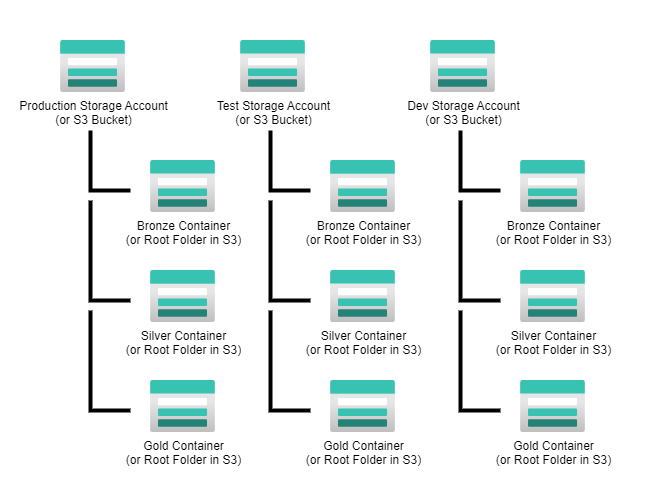
Other structures are possible. Seperate storage accounts per zone could also be created (as opposed to only segmenting the zones with Containers), but this is likely overkill and requires additional unneeded management.
Bronze Folder Structure
While Bion does not currently contain functionality around ingestion of raw files into the Bronze zone, it does benefit from a well designed Bronze folder structure as a source for its Silver models. There are many folder structures possible and Bion supports most of them, but in general, if the design of the Bronze folder structure is under the developer's control, it is best to follow the guidelines listed below.
Include Table Names in the path or File Name when Possible
Although not absolutely required, folder structures should contain the table either somewhere in the path or in the file name itself. When this is the case, model-wide settings can be applied when identifying the source files for each table. This is because Bion allows tokens in the path that are replaced on a per-table basis when searching for files to process for each table. If a reliable table name is not included somewhere in the path or file name, each table must be configured individually to find the proper files for the table. Creating a folder name somewhere in the path that is named after the table is the most reliable approach. File names work as well, however care must be taken to make sure Similarly named files can be differentiated. (You don't want your sales table to load sales and salesorder files because they both contain the name sales, for example).
Keeping older Files
It is often useful to keep a copy of all files extracted from a source system - accounting for any retention policies and sensitive data of course. This allows the reconstruction of not only current views but also views of the source system(s). Since we do not transform data when landing the files in bronze, we are safe from the impact of changing business requirements in the future, as we can always go back to these "raw" files with new business rules in mind, and reprocess the data in a different way than we originally did.
In general it is also useful to keep historical data in bronze so that trends in data can be reconstructed if the downstream tables need to be rebuilt for any reason.
Using ISO Dated folders
As discussed above, it is useful to keep history in Bronze. This of course means it is useful to associate the extract dates with the source files. Ideally this is accomplished without altering the file's internal structure. Although the actual name of the file could, for example, contain the extract date and time, here, however, we recommend the use of specially named folders for this purpose.
In particular, for Bion, we recommend using a folder that is named using an ISO formatted date. The single name of the folder contains the year, month, day, and optionally hours, minutes and seconds as needed. It follows the following format:
YYYYMMDDHHMMSS
If you only extract files one a day, or hourly, it is still nice to include placeholders for any unused units that are more granular. That way if extract frequency is increased in the future, the length of the folder names, and the sort order, does not change.
In these examples, the various units are always at least 2 digits long (the year of course being 4 digits). Any numbers less than the specified length are padded with leading zeros to facilitate proper sorting and to remove any ambiguity. In addition, 24 hour units are used. Any more granular but unused elements should be padded with zeros.
Example of proper and improper ISO folder formats:
Proper / preferred
Improper
Most tools used for file ingestion can generate folder names with the proper syntax.
ISO dated folders provide a flexible way to represent date and times associated with the contained files without requiring multiple levels to be traversed. For example, you could have a year folder, then month folders within, and then day folders within that. But suppose in the future you want to go to hourly extracts. Because the folder structure did not take hours into account, the depth of the folder structure must now change. Also having hours, minutes, and seconds as folders means a folder depth of 6 just to support the extract date. This is tedious to traverse. ISO dated folders accomplish the same thing but with a single folder.
A Flexible Folder Structure
The following folder structure is preferred and allows for a large degree of flexibility and scenarios:
This structure will work with many scenarios and has the following advantages:
A variation of this structure is to simply swap the location of the folder that bears the table name and the folder that has the ISO date. This swap implies, however, that the tables contained within all follow the same extract interval/frequency. If this would change in the future, this folder design becomes slightly unintuitive (but still functional)
Full Extracts of Large Systems
In some cases it may not be practical or cost-effective to store massive historical extracts. This can be the case when only full extracts of the source system are available, and these systems contain large amounts of data. In these cases it may force us to shift the history "right" into the Silver zone (via effective dated tables) and not keep the massive source system files on a day by day basis. In these cases it is still often useful to maintain at least a weeks worth of source files so that data can be rolled back in emergency situations. Thus the preferred pattern discussed above will still suffice. But in addition we will need to build out a "data retention" process that deletes the older ISO dated folders after a (relatively short) retention period. Thus, the folder structure described above still works, even scenarios where "long" history is not maintained.
Preferred File Formats
For a number of reasons, including retention of data types and other meta-data, it is useful to land data from relational source systems as parquet files if possible. Parquet files contain the schema information and store the data in an efficient manner. This does not imply that all sources should be converted to Parquet, however. When pulling data from rest API's, for example, which often return JSON results, the JSON documents should be stored directly (rather than transformed to parquet.) This is in keeping with the notion of transforming bronze data as little as possible. In the case of relational (SQL) data sources, conversion to parquet is generally a lossless conversion. But converting JSON documents to parquet may require intimate knowledge of the json structure, and new elements can be easily missed, or converted to the wrong data type, meaning data will be lost.
Out of the box, Bion supports Parquet, JSON, and CSV files as source files, although other types are supported through the use of custom cells.
Loading Bronze Data Directly into Delta Tables.
In some cases, if allowed for by the system used for ingestion, it may be desireable to land bronze data directly into delta tables. In these cases, the discussions regarding folder structures above are only partly relevant (dated folders are not needed). However, when using this technique, the following considerations apply:
Generally, landing bronze data as parquet files instead of loading directly into delta tables is currently the preferred Bion approach, but by no means necessary.
Configuring Bion to use the Preferred Bronze Folder Structure
TODO to do - placeholder so I do not forget. This will likely go elsewhere.
Silver Folder Structure
Whether managed or unmanaged tables are used for Silver, it is useful to define the location where the underlying files for the Silver delta tables will be written. Bion does not impose any particular requirements of how the Silver zone of the data lake is structured, with the exception that different Bion Data Models must target different folders in the data lake. These folders must not overlap. Otherwise conflicts will occur both with some of the Bion functionality as well as table names if shared across models.
In this example, the Silver Tier 1 models Adventureworks and Salesforce, as well as the integrated and conformed tier2 Business model CombinedSales are each stored in a separate folder to avoid any conflicts.
Gold Folder Structure
Much like the Silver layer, Bion does not impose any particular requirements of how the Gold zone of the data lake is structured, with the exception that, like Silver, different Bion Gold Data Models must target different folders in the data lake. These folders must not overlap. Otherwise conflicts will occur both with some of the Bion functionality as well as table names if shared across models.
In this example, the Sales and Inventory folders correspond to different Bion Gold models, and are thus separate to avoid any conflicts.
Installing Draw IO
Note: Draw IO is optional. However, Bion can generate diagrams of data models using Draw.io.
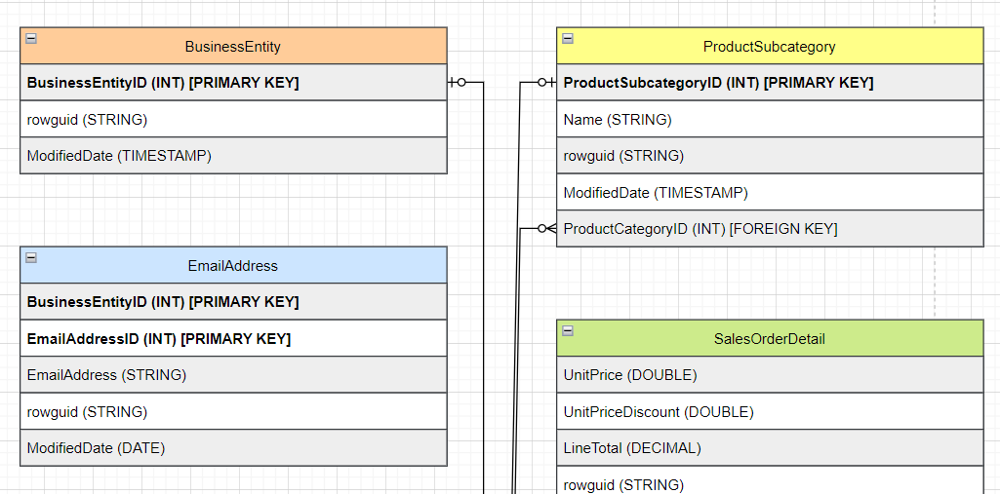
If you wish to use this feature, you can use the following link to install a desktop version of Draw.io for use with Bion. Follow the steps below to install Draw IO locally if you wish to use this feature...
First, click the following button to navigate to the github site that contains the installer...
Select the latest version of the "Windows Installer"...
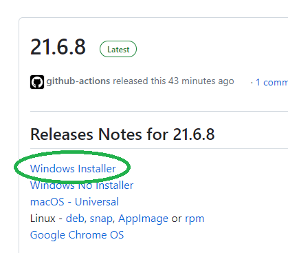
Select a download location...
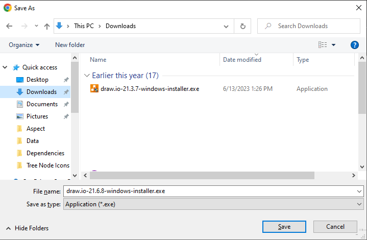
Once the file is downloaded, double click on the executable to install the application.
For best results with Bion, choose the default installation location...
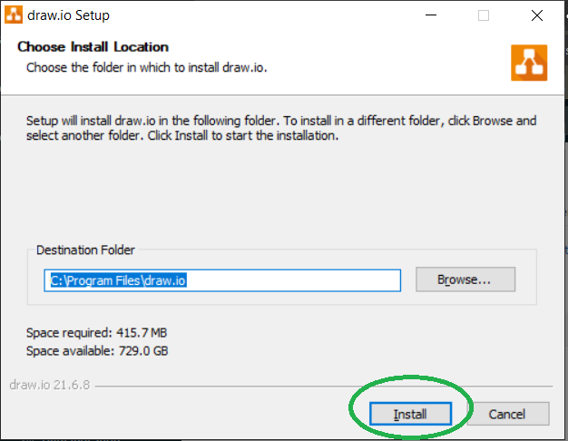
UNCHECK "Run draw.io". We do not need to run it at this time. Select "Finish"...
Installing Bion
Bion Installation
See your Core BTS Representative to obtain the latest version of the Bion UI installer. Once obtained, follow the steps below to install the Bion UI...
To begin, double click on the Bion Zip file to open the archive...
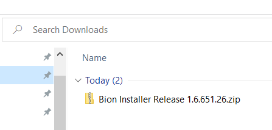
Then double click on the .msi or setup file to start the installation...
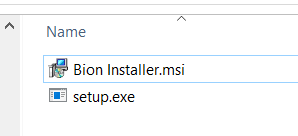
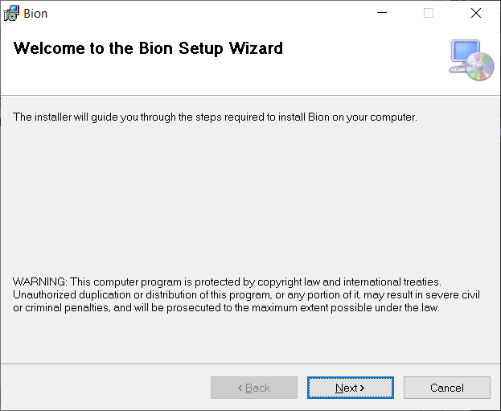
Click "Next" (and keep clicking "Next") until you come to the License Agreement Screen. Then choose "I Agree". and select "Next" again.
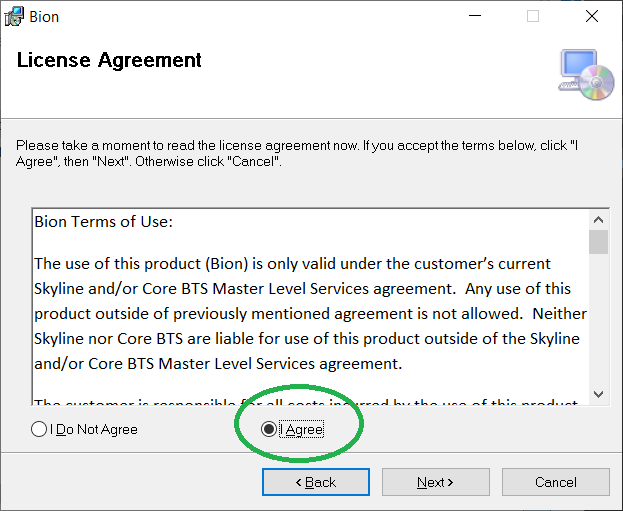
Accept any security warnings and allow the application to complete its installation. Then close the final dialog.
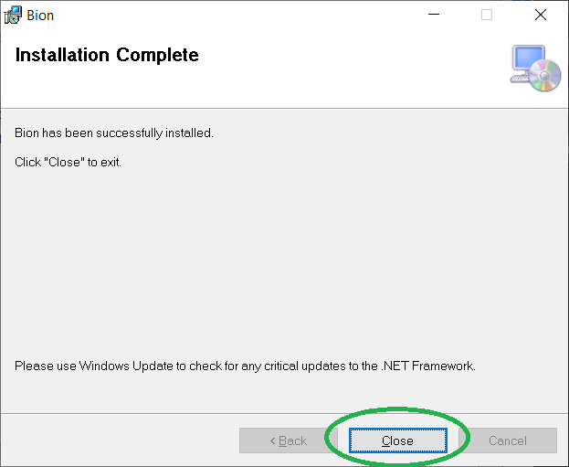
Running Bion for the first time.
Once installed, there will be a Bion icon on the desktop. Alternatively, you can find Bion in Applications under the Start menu.
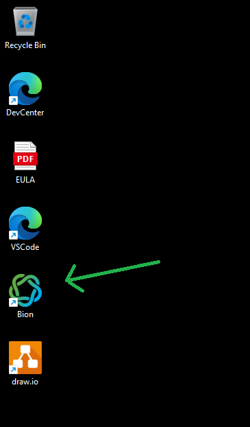
Double click on this icon to launch Bion.
The first time you launch Bion, you may get a security prompt similar to the following. Bion uses a light-weight version of SQL server (LocalDB) for its local meta-store. Please click "Yes" to allow the installation, even if you have a version of SQL server installed. This is a very light version and the install will be fast.
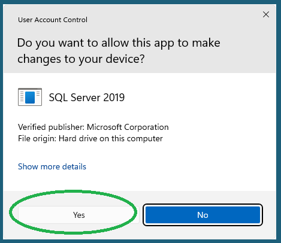
Once completed, the application will launch.
Workspace Configuration
Bion supports multiple workspaces. Each workspace can be configured to support a particular client or project. Within a workspace, all the models that support a particular client or project can be created. But it is best to partition different clients from each other. In fact, it is recommended to always create a new workspace for each client that you may support.
To create a workspace, click on one of the two links within the application...
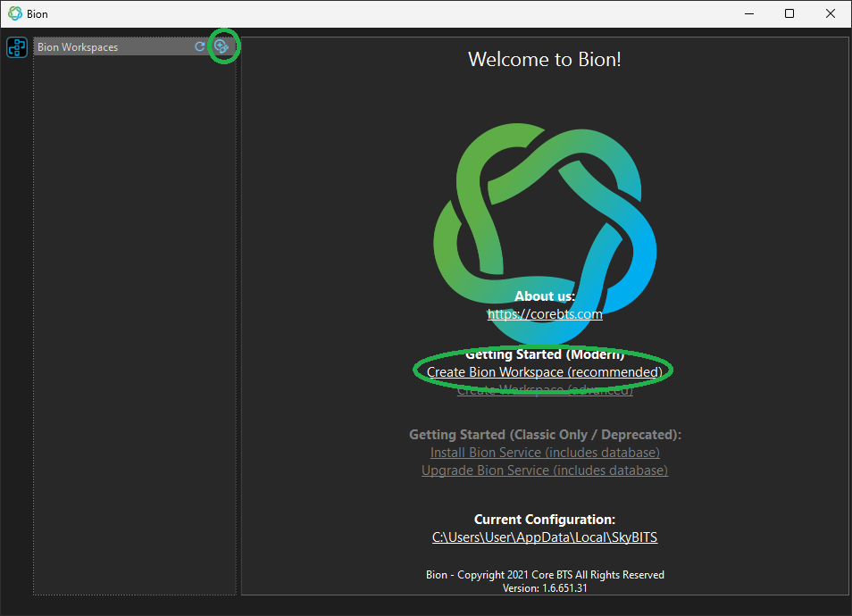
Give a meaningful name to your workspace. When supporting a client, it is a good idea to include the client name in the workspace name.
Bion also requires a license in order to function properly. Although the license key can entered at a later time, it is convenient to enter it on this screen during workspace creation...
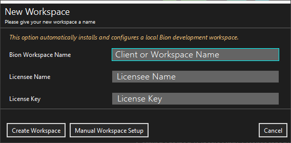
Click "Create Workspace". You may see a screen pop up momentarily as an installation script runs. After a few moments, the Workspace configuration page will be displayed.
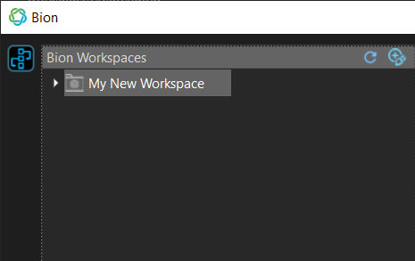
Download the T4 Templates
Bion uses a form of T4 templates to generate the various notebooks and other artifacts. These templates must be downloaded before proceeding with development. To download the Bion T4 templates, expand the workspace node and right-click on the "Configuration" node. Then select "Download / Update Bion Lakehouse Templates".
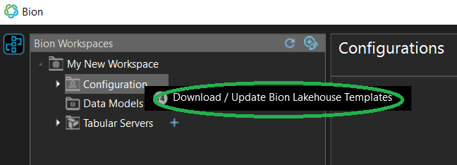
A screen which contains the settings needed to download the templates will appear. Typically these settings do not need to be changed. Select "Download" to download the templates...
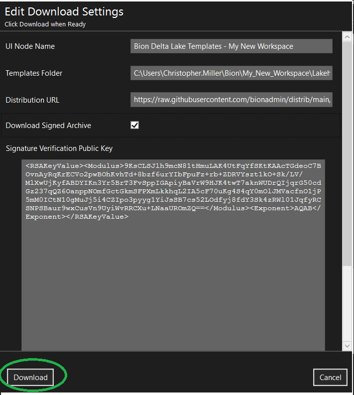
If the download was successful, right-clicking on the configuration node will reveal several more items...
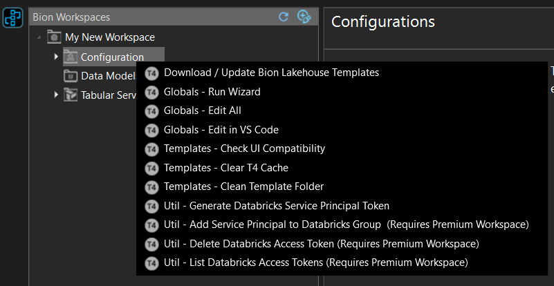
You are now ready for the next step: Creating data models.
Data Models Overview
At the heart of the functionality of Bion is the Bion Data Model. Data Models contain the meta-data which defines your Silver and Gold layers of your Lakehouse. In Bion, a data model consists of a collection of related table definitions. These tables are usually related in some manner. A Silver Bion model may contain all the tables from a particular source system, or all the "Tier 2" conformed and integrated business tables that make up the logical business model. A Gold model may contain all the tables for a specific data mart, or, in some cases, all the gold tables of a more thorough enterprise model.
For both Databricks and Fabric deployements, the tables in a Bion Data Model determine how Bion generates the various notebooks that run the ETL. Typically Bion will generate one notebook per table in a model as well as a few "common" or "utility" notebooks that are shared across the model.
Multiple Models
The number of models needed to support a particular solution are up to the engineer, but in general, different models should be used when storing tables from different source systems to avoid table name conflicts, and silver and gold tables should always be in separate models and never combined. The simplest solution may contain a single Silver model and a single Gold model. More complex solutions (especially those with multiple source systems) may contain many Silver models (and a two-tiered approach) as well as multiple Gold models to reflect different end-user use cases, departments, and data marts. Bion supports all these scenarios, but it is up the the engineer and architect to determine the appropriate model structure.
Although it is possible to override most of the model level settings at the table level, this can be tedious if you include many different tables that require many different configurations within the same model. This is another reason why multiple source systems are split into different models, as they often require different settings (the source folders or file formats may be different, and may require different processing logic).
In short, tables from the same source system and with similar setting requirements should be combined into the same model. Tables with different source systems and setting requirements, destinations, etc. should be split into two or more models. Any Gold and Silver models should always be separate from each other. The number of Gold models entirely depends on what data marts you wish to support and how this data will be consumed.
Model Settings
Besides being a collection of tables, models contain important settings which define how Bion will dynamically generate the various python notebooks that will in turn execute the ETL to load and maintain the tables in the model. Although most of these settings can be overriden at the table level, model level settings typically define how most of the tables in the model will behave. In most cases, table level overrides will not be needed.
Although it is possible for an advanced user to set these settings manually, there are many interdependencies between the various settings. Improper manual configuration of these settings can result in unexpected and unsupported results. Thus, it is highly recommended that the user instead use the available Model Settings Wizards that are described in a later section. These wizards provide explanations of the various Bion features and set the appropriate Model settings in a consistent manner.
The settings are defined in the Model Settings Reference section of this document. However, understanding each of these settings individually is not required when using the Model Wizards.
Table Settings
In addition to all the model settings that can be overriden at the table level, a few table-specific settings also exist. These settings are defined in the Table Settings Reference section of this document. Unlike the model-level settings, no wizards exist for these table level settings, and therefore may require manual configuration.
Model Types
Bion supports two basic model types: Relational and Dimensional. Currently these are labeled in Bion as Silver and Gold respectively (however, the association of a layer name and a model type is currently deprecated). For now, just understand that models of type "Silver" are relational, and "Gold" are dimensional. You may choose to have relational models in your gold layer as well, in which case you would choose type "Silver".
Relational (Silver) and Dimensional (Gold) models share many of the same features. Below are a few ways in which they are different:
Note: Future versions of Bion may combine these two model types into one single code-base, in which these limitations may be removed where appropriate.
Creating Data Models
Before any tables can be defined, a Bion Data Model to hold them must be created and defined.
Adding a Data Model to a Workspace
Workspaces can contain multiple data models. To add a data model, expand the workspace and then either click on the "+" symbol next to the "Data Models" node, or right-click on the "Data Models" node and select "New Data Model"...
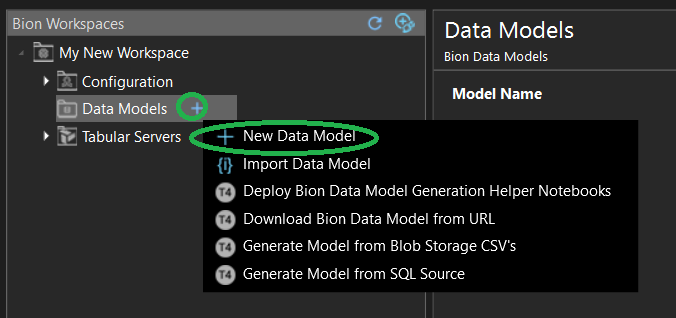
The "New Data Model" screen will appear. There are several settings on this screen. The two that should be set immediately are the model name and the model type.
Typically you will create your Silver models first, and the Gold model later.
For appropriate model names, typically there is a 1:1 relationship between a databricks database (schema), or a Fabric Lakehouse, and a Data model, so choosing a name that relates to one of this entities is helpful.
The rest of the settings on this screen are best set using the Bion wizards, as they provide many helpful explanations of the various settings. Thus, after setting the model name and the template type, select "Save"...
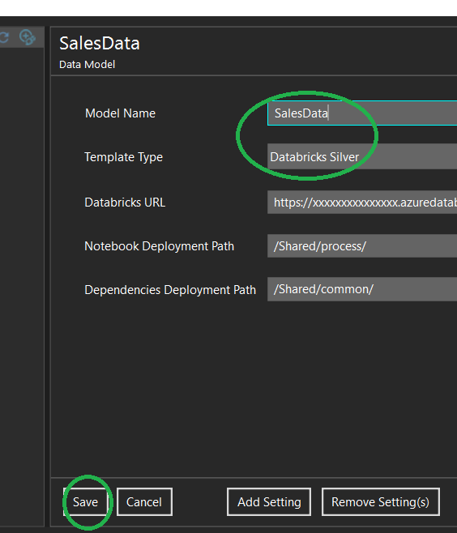
Although tables can now theoretically be added to the new model, the best next step is to first run the verious Bion Model wizards to first configure the models as desired since some of the necessary settings become available after running the wizards.
Bion Wizards
Bion provides many options for how the notebooks are generated. Rather than generating highly complex code to deploy, Bion generally only generates the code necessary for the specific features and settings that are chosen by the developer. This keeps the generated code relatively easy to understand and troubleshoot. In addition, rather than forcing various features on the developer, Bion allows a granular approach to picking the features to implement. This however results in many settings that must be configured in precise combinations in order for the notebooks toe be generated and for everything to work together correctly. These settings appear on the models screen (and in the case of table level overrides, the tables screen).
By default, the models screen is mostly devoid of settings. Although settings can be manually added and edited, this would quickly become a difficult and tedious task. Many of the settings rely on each other and improper combinations can result in unexpected/unsupported results. Editing the models settings directly is much like going into the windows registry and changing registry keys just to change your screen resolution, backdrop wallpaper, or add a folder to the desktop. You can do it but there is a better way...
In the case of Bion that better way is the Bion Wizards. The wizards have been designed to simplify the configuration of Bion data models. The wizards use a question and answer approach to configuring the data models. Each question is explained so that the developer understands what functionality the wizard is asking about, and then the developer can answer the question and move onto the next. The questions are asked in plain english, and the various settings are then properly set based on the answers given.
This approach removes the burden of understanding each of the specific model settings, and rather presents the developer with questions regarding the higher-level functionality that the developer wishes to implement. In addition, the wizards help guarantee the settings are set in conjunction properly so that unexpected settings combinations are avoided.
Running the Wizards
Once a model has been created, the model wizards can be run in order to properly configure the model. To run the wizards, right-click on the desired model and select "Settings - Run Model Wizard(s)...
From this screen, the various wizards can be chosen. Although all the wizards can be run at the same time (with the exception of the streaming wizard), and although they may all need to be run, it is a good idea to run them one-at-a-time, as the model is not saved until all wizards have run to completion. Some of the wizards contain a lot of information and questions.
Please note that the wizards remember the choices selected upon subsequent runs. Thus the wizards can be re-run at any time and the "next" button can be clicked without having to re-enter previously entered data. Also note that the wizards are dynamic, meaning they adjust the questions asked based on previous answers. Thus the wizards attempt to isolate the developer from needing to answer irrelevant questions or deal with unneeded settings.
Upon completing a wizard, new or updated settings will appear on the model screen.
The various wizards are described below:
Source Wizard
This wizard walks through the various settings needed to set up access to the source (bronze) files or delta tables for where a model reads its data from. Silver models that read from source files in the data lake may require quite a few questions to be answered. Gold models and silver models that read from tables require less configuration, so the wizard will be quicker.
This wizard helps the developer configure the data sources for a Bion data model, and deals with where the data is coming from (tables or files in a data lake), and in the case of files, the various folder structures and file types that Bion can expect. Configurations such as source storage accounts or Fabric shortcuts etc. are configured in this wizard.
Destination Wizard
This wizard deals with how and where the model's tables are persisted in Databricks. This includes defining target Storage accounts, S3 accounts, or Fabric Shortcuts, deciding if managed or unmanaged tables are used, and deals with Unity catalog as it relates to the target table.
Processing Options Wizard
This wizard walks through various processing options for the model, such as code generation options, effective dates, data quality, and more. In short, this wizard deals with configuring the various "Features" available and partly determines how data is transformed into the target.
Deployment Options Wizard
Depending on if Databricks Or Fabric is used, Bion is deployed differently. This wizard deals with configuring the model for deployment into the development environment.
Streaming Wizard
This wizard deals with configuring a model for Streaming Delta Live tables. This wizard is not compatible with any of the other wizards. Thus you must choose early on if you are going to use streaming tables in your model. Note however that many features available in the standard tables such as effective dates, dimensional models, etc. are not available with the streaming tables.
Next steps
Once the wizards have been run, tables can be created, and models can be deployed.
Resources
Model Settings Reference
Bion model and table settings control which Bion features are enabled and how those features behave. In fact, most Bion features are controlled by the model and table settings. Features such as effective dating, delete processing, etc. are controlled by these settings. Although settings are typically set at a model-wide scope (and therefore set on the model screen), they can also be overridden on a per-table basis by adding a setting with the same name at the table level and configuring it differently than the parent model.
When deploying a model (either locally or via the API), Bion dynamically generates the python notebook files by inspecting the model and tables being deployed and generating the code necessary to implement the chosen features. In short, it alters the generated code based on these settings. Because of this, the generated code need not be so complex that it must account for all permutations of the various settings. Instead, the generated notebooks (for the most part) only contain the code necessary for settings specified. The upside of this approach is simpler deployed code while still supporting a wide array of features. The downside, however, is that models must be redeployed (usually in their entirety) when settings are changed.
Typically, settings are NOT ADDED to the model manually. Instead, they should be added and modified by running the various model wizards. This is because the wizards are written to ensure the right COMBINATION of settings are set so that they work together correctly. Manually adding and configuring settings risks creating invalid combinations of settings, and therefore, invalid or incorrect code.
That being said, however, they can sometimes be added and modified manually in advanced scenarios and by advanced users. Below is a reference of the various model settings:
Alt Keys Enabled
When reading data into a silver table from multiple sources (source systems) it may be necessary to "integrate" the data into a single entity in the target table. Typically Silver models that read from source bronze files (Tier 1) do no not require any sort of integration because the source files represent a single source system already. But Silver models that read from other silver tables (Tier 2) can sometimes read from multiple tables across multiple source systems and the data must be merged/integrated into single records.
For example, imagine we have two SilverTables:
Customers_System1 - customers from our primary sales system
and
Customers_System2 - customers from a different source system.
If we wish to merge the customer records into a single target record that takes attributes from each table, we are integrating the records.
Integrating records across multiple source systems in Bion is relatively straight-forward in cases where there is a reliable column or set of columns across all source systems that reliable and uniquely identify an entity. For example, if a field called UniversalCustomerID is present in both systems and UniversalCustomerID uniquely identifies customers in each source system, then this simply becomes the source-system (primary) key of the target table and records are joined together in the query on this same column to take the desired attributes from each source system into a single target row. Similarly, if SourceSystem1 has a key that reliably points to a SourceSystem2 record, a similar approach can be taken. In these cases, no additional Bion features are required.
Sometimes, however, there may be issues with this approach. A good example is when an email address is the most reliable field available across systems to identify if a customer is the same. Issues can arise with the above approach.
What happens if a customer's email address is changed in one system and not the other?
What happens if there are missing email addresses in one or more systems?
What happens when missing email addresses are later fixed, and we want to fix our data in our target table when this happens?
Bion has a feature that can be used in these scenarios:
When integrating records with unreliable joins (as described in the previous slides), a Bion feature named "Integration Keys" (Alternate Keys) is available. This is an advanced feature which requires some explanation:
When enabled, Bion adds a Surrogate Key to the target table (much like a gold table). The surrogate key becomes the key that should be used in Gold Layers and to join the silver Tier 2 tables together as this isolates the users from dealing with the multiple keys of the various source systems. Additionally, Bion makes additional key checkboxes available on each column which specify how the data can be merged when unreliable join keys must be used. The additional checkboxes are named "Alt Key" and Here's how they work:
When a record is extracted, it uses the Primary Key to check for uniqueness and to generate the hash used in the surrogate key. If the key is accurate and present, there are no issues. However, if the Primary Key is null, Bion will search for columns marked as alternate keys. The first non-null alternate key that is found is used as the hash value instead. Bion also adds a new column to the target table named "Audit_IsMissingPrimaryKey". This audit field is set to true in these cases.
Since Surrogate Keys are used, Bion also enables Foreign Keys, a Bion feature which joins tables together on surrogate keys to foreign keys. As long as the appropriate values are provided in the source queries, Bion automatically generates the correct hashes for the foreign keys based on which primary or alternate keys are available. In this manner, tables can be joined without regard to which source system keys are available.
If the record is fixed at a future date (in our example, if email address is added or corrected), Bion automatically fixes foreign keys to point to the correct record, and then deletes any duplicate "orphans".
Do you wish to enable Integration (Alternate) Keys ?
False=No. I have a single source system, or I have reliable shared primary keys.
True=Yes. I have one or more tables I must integrate, and unreliable common keys.
Alt Keys Remove Resolved
When Bion cannot join on a primary key and instead uses an alternate key this can result in two records being inserted into the target system. This cannot be avoided. However, later, if the column that is involved in the join is fixed and the records are re-extracted, then Bion can successfully join and one of the records is made "Whole". The other record then becomes an "orphan".
Bion automatically fixes all foreign keys so that they point to the correct record when this happens. However, the other "orphan" record will still exist.
Do you want Bion to delete these orphan records when this occurs?
False=No. I want to know when this happened, or am otherwise ok with leaving them.
True=Yes. I don't want my data cluttered with these orphan records.
Alt Keys Remove With Flag
When removing orphaned records, Bion can perform a soft-delete or a hard-delete.
Do you wish to add a flag to indicate the records were deleted instead of using a hard-delete?
False=No. Just get rid of them.
True=Yes. Add a flag and mark them as deleted.
Change Hash Enabled
When a record is extracted, by default, Bion will update the record in the target table without checking to see if any of the actual column values in the target table will change. For example, if a source system record changes because column x has changed, and the record is re-extracted and reprocessed by Bion, the record will be updated even if column x (the only source system column that changed) is not present on the target table. This results in an unnecessary update.
However, Bion can add a column called "RevisionHash" which will store a hash of all the business columns in the table. When the record is queried again at a future date, the record will be updated only if the hash has changed. Identical records will not result in an unnecessary update when this technique is used.
Do you want to enable the Change Hash feature?
True=Yes, enable Change Hashes
False=No, always update the target record even if no data has changed.
Custom Beginning Cell Enabled
Custom cells allow for custom user python or sql code to be added to each notebook in the following three possible locations:
1) At the beginning of the notebook 2) After the source file (if any) is identified, but before the data is queried 3) At the end of the notebook.
Notes: If using the wizard, the custom cell settings will be added to each table. However, if enabling here, you must add the text area settings "Custom Beginning Cell", "Custom Pre Query Cell" and/or "Custom End Cell" to the table settings.
Also, Python cells do not require any special identifier, as the default language for the notebooks is python. However if you wish to include SQL Cells, include the %sql identifier at the beginning of your custom code. Other languages are not supported at this time, unless they are manually "Magicified".
Do you wish to enable the specified custom cell?
True=Yes, make these changes
Custom End Cell Enabled
Custom cells allow for custom user python or sql code to be added to each notebook in the following three possible locations:
1) At the beginning of the notebook 2) After the source file (if any) is identified, but before the data is queried 3) At the end of the notebook.
Notes: If using the wizard, the custom cell settings will be added to each table. However, if enabling here, you must add the text area settings "Custom Beginning Cell", "Custom Pre Query Cell" and/or "Custom End Cell" to the table settings.
Also, Python cells do not require any special identifier, as the default language for the notebooks is python. However if you wish to include SQL Cells, include the %sql identifier at the beginning of your custom code. Other languages are not supported at this time, unless they are manually "Magicified".
Do you wish to enable the specified custom cell?
True=Yes, make these changes
Custom Pre Query Cell Enabled
Custom cells allow for custom user python or sql code to be added to each notebook in the following three possible locations:
1) At the beginning of the notebook 2) After the source file (if any) is identified, but before the data is queried 3) At the end of the notebook.
Notes: If using the wizard, the custom cell settings will be added to each table. However, if enabling here, you must add the text area settings "Custom Beginning Cell", "Custom Pre Query Cell" and/or "Custom End Cell" to the table settings.
Also, Python cells do not require any special identifier, as the default language for the notebooks is python. However if you wish to include SQL Cells, include the %sql identifier at the beginning of your custom code. Other languages are not supported at this time, unless they are manually "Magicified".
Do you wish to enable the specified custom cell?
True=Yes, make these changes
Database Override
What is the name of the Databricks database (schema) where the tables in this model will reside?
Databricks URL
Bion uses the Databricks API to deploy the generated notebooks from your local workstation to a Databricks instance. Typically, you will use Bion to deploy into the dev environment only - likely into a path that represents a git repository. Promotion to higher environments can then be managed via CICD pipelines.
Bion uses the API URL for this purpose. The API URL is the same as the first part of the workspace URL that is visible at the top of the browser when you log into your workspace. The URL is typically in one of two formats, depending on if you are deploying to AWS or Azure:
AWS:
https://xxxxxxxxxxxxxxx.cloud.databricks.com/
Azure: https://xxxxxxxxxxxxxxx.azuredatabricks.net/
Please enter your URL Here:
Delete Not in Source Query
Delete processing works in different ways depending on other settings in the model. But generally, by default, Bion does not handle deleted records. However, when delete processing is enabled, Bion will either remove the deleted record from the target table, or in the case of effective dating or Type 4 tables, expire the deleted row. Bion can also soft-delete records when effective-dating is not used, if desired.
"Delete Using Delete Query" requires a user-defined query for each table that identifies the source system keys representing the records to be deleted.
"Delete Not in Source Query" removes all records not present in the source query or source file. Requires a full extract to work properly.
Delete Using Delete Query
Delete processing works in different ways depending on other settings in the model. But generally, by default, Bion does not handle deleted records. However, when delete processing is enabled, Bion will either remove the deleted record from the target table, or in the case of effective dating or Type 4 tables, expire the deleted row. Bion can also soft-delete records when effective-dating is not used, if desired.
"Delete Using Delete Query" requires a user-defined query for each table that identifies the source system keys representing the records to be deleted.
"Delete Not in Source Query" removes all records not present in the source query or source file. Requires a full extract to work properly.
Delete With Flag
Bion can hard-delete records, meaning they are removed from the destination table, or it can soft-delete them, meaning the record is only marked as deleted by updating the value in a column called "Audit_IsDeleted". The Audit_IsDeleted column is only added to the table if you choose this option.
How do you want to handle deletes?
False=Hard-Deletes
True=Soft-Deletes
Dependencies Deployment Path
Deployment paths explanation
Bion deploys notebooks to any path you specify. There are two sets of notebooks: Utility (dependency) notebooks, which are shared across a model, and table specific notebooks, one per each table in the model. The table-specific notebooks are typically deployed into a separate folder than the shared/common notebooks.
If you have more than one model (typical), you will want to deploy each model into different folders than any other previous model to keep things well organized as well as to avoid overwriting table notebooks from different models that may have the same name.
It is therefore a good idea to place the name of your model somewhere in your path (the name of some subfolder) to ensure uniqueness.
Example for the two folder names: /Shared/Gold/MyFirstGoldModel/process /Shared/Gold/MyFirstGoldModel/common
If you are using version control, you can deploy directly into your repo using paths similar to the following:
/Repos/myemail@mydomain.com/MyRepoName/Gold/MyFirstGoldModel/process/ /Repos/myemail@mydomain.com/MyRepoName/Gold/MyFirstGoldModel/common/
You can also make the paths you specify multi-user proof by using an environmental variable. Example:
/Repos/<ENV:MyEmailAddress>/MyRepoName/Databricks/notebooks/Gold/MyFirstGoldModel/process/ /Repos/<ENV:MyEmailAddress>/MyRepoName/Databricks/notebooks/Gold/MyFirstGoldModel/process/
Any environmental variable can be used. In this example the MyEmailAddress environmental variable should be created to contain the value of the email address which corresponds to the folder in databricks for that user's repository.
Finally, an important note: Bion attemps to generate relative paths for calls between notebooks so that the notebooks can be deployed to different target locations (example, during CICD) without breaking functionality. To achieve this, Bion compares the beginning parts of the two paths below and eliminates the common left-hand part, making the paths relative. Please make sure the common part (beginning part) of the following remote paths you will specify are exactly identical INCLUDING CASE so that this does not fail.
Good Examples: /Repos/<ENV:MyEmailAddress>/MyRepoName/Databricks/notebooks/Gold/MyFirstGoldModel/process/ /Repos/<ENV:MyEmailAddress>/MyRepoName/Databricks/notebooks/Gold/MyFirstGoldModel/common/ or /Shared/Gold/MyFirstGoldModel/process /Shared/Gold/MyFirstGoldModel/common BUT NOT: /Repos/<ENV:MyEmailAddress>/MyRepoName/Databricks/notebooks/Gold/MyFirstGoldModel/process/ /Shared/SomewhereElse/MyFirstGoldModel/process/
Please specify the remote deployment paths:
Dest Auto Schema
By default, you must add all the columns you wish a table to contain to the data model table definition or Bion will not include them on the resulting table. However, Bion does support a "low-meta-data" approach (Dest Auto Schema) where you need only supply the primary key(s) to the table. All columns present in the source will be automatically added to the table either via schema evolution or other techniques. As new columns appear in the source over time, these columns will automatically be added to the destination. Note that you can still explicitly add specific columns if you wish, especially if you wish to add expressions to a certain column.
While this feature can be convenient, you should be aware of the limitations before enabling this feature:
1) You will not be able to use certain Bion features, such as effective dating, Integrating and Conforming, and possibly other features. 2) You will not be able to control the names of the columns on the table unless you disable the column and create a new column with an expression that references the old column. 3) There can be unexpected performance impacts when the schema changes.
We recommend using this feature only on the first "Tier" in your lakehouse layers. Higher tiers and layers should be well defined and should not use this feature.
Do you wish to enable the Auto Schema feature?
False=No, I will define my schema the way I want.
True=Yes, turn on auto-Schema.
Dest Catalog Name
Unity Catalog requires the name of the destination catalog to be specified in various SQL statements generated by Bion. Enter the name of the catalog that will contain the schemas and tables for this model.
Dest Client ID Scope Key
When unity catalog is not used, and the model is deployed to Azure, Bion Currently must create mount points for the storage account and container that will hold the destination delta files. This requires an application (ClientID) and Secret to be set up in the secret scope (key vault). The application must be granted access to the storage account and container in order to write the files. The tenant ID must also be stored in the secret scope. If you have not created/configured a clientid/secret with access to your destination storage account, please create one now.
Please indicate the names of the keys that contain the secret values:
Dest Client Secret Scope Key
When unity catalog is not used, and the model is deployed to Azure, Bion Currently must create mount points for the storage account and container that will hold the destination delta files. This requires an application (ClientID) and Secret to be set up in the secret scope (key vault). The application must be granted access to the storage account and container in order to write the files. The tenant ID must also be stored in the secret scope. If you have not created/configured a clientid/secret with access to your destination storage account, please create one now.
Please indicate the names of the keys that contain the secret values:
Dest Container Default
Please enter the name of the destination Container (file system) where the delta files for the tables in this model will be located. If you will be using different containers for different environments (dev vs. test vs. prod), enter the value for the dev environment here.
Dest Container Scope Key
When using Azure: When running in each environment (dev/test/prod etc.), Bion will check the secret scope for secrets with the following names. If such secrets are found, Bion will use the values for the corresponding Storage Accounts, Containers, and destination folder values. If any of the keys are not present, Bion will instead use the default values already entered into this wizard. In most cases, a secret will be created for the storage account as this may vary from environment to environment, but the destination path and often container name may not be created as they are typically the same between environments.
Enter the key names here (or accept the defaults) even if you do not plan on creating the secrets themselves. (These are the names of the scope keys, not their values)
Dest Folder Default
When using AWS: Within a bucket, you may further specify a folder in which all models of the current type are stored (recommended). For example, you may store all Gold models in a folder named "Gold", or "data/Gold". This will be the common path for all models of that type. Additional sub-folders for different specific models are also recommended, but are specified in later step. This folder is the common path for all models of a type within a bucket.
When using Azure: Within a container, you may further specify a folder in which all models of the current type are stored (recommended). For example, you may store all Gold models in a folder named "Gold", or "data/Gold". This will be the common path for all models of that type. Additional sub-folders for different specific models are also recommended, but are specified in later step. This folder is the common path for all models of a type within a container.
When using Fabric: When using unmanaged tables with fabric, you must specify a storage folder in which the delta files are stored. This folder should start with "Files/" and leverage an external link that is registered in your destination Lakehouse. For example, if you have a shortcut called "gold" in your Lakehouse, you can specify a target such as "Files/gold/MyGoldModelFolder".
Note that multiple models saved to the same shortcut should specify different subfolders, else the models/tables could interfere with each other. For example:
"Files/gold/MyFirstGoldModel" "Files/gold/MySecondGoldModel"
In other words, multiple models should not have the same storage folder defined, although they can leverage the same shortcut (leftmost portion of the path).
Please specify a folder path that leverages a Shortcut in your lakehouse, and is unique to this model:
Dest Folder Scope Key
When using AWS: When running in each environment (dev/test/prod etc.), Bion will check the secret scope for secrets with the following names. If such secrets are found, Bion will use the values for the corresponding S3 Bucket and destination folder values. If any of the keys are not present, Bion will instead use the default values already entered into this wizard. In most cases, a secret will be created for the S3 bucket as this may vary from environment to environment, but the destination paths will typically the same, and no such secret needs to be created.
Enter the key names here (or accept the defaults) even if you do not plan on creating the secrets themselves. (These are the names of the scope keys, not their values)
When using Azure: When running in each environment (dev/test/prod etc.), Bion will check the secret scope for secrets with the following names. If such secrets are found, Bion will use the values for the corresponding Storage Accounts, Containers, and destination folder values. If any of the keys are not present, Bion will instead use the default values already entered into this wizard. In most cases, a secret will be created for the storage account as this may vary from environment to environment, but the destination path and often container name may not be created as they are typically the same between environments.
Enter the key names here (or accept the defaults) even if you do not plan on creating the secrets themselves. (These are the names of the scope keys, not their values)
Dest Path Template
When deploying to AWS, or when using Unity Catalog in AWS or Azure, Path templates are required. Path templates define the syntax required to reference the destination data.
Path templates are also required when deploying to Fabric, allthough typically the value for this setting will simply be "<Dest Folder>"
Dest Path Templates support the following tags and replace the values with the corresponding calculated values at runtime:
<Dest S3 Bucket> <Dest Folder> <Dest Storage Acct> <Dest Container>
Dest S3 Bucket Default
Please enter the name of the destination S3 Bucket where the delta files for the tables in this model will be located. If you will be using different buckets (recommended) for different environments (dev vs. test vs. prod), enter the value for the development environment here.
Dest S3 Bucket Enabled
AWS Deployments currently require S3 buckets to be used for the data lake for both sources and destinations. Likewise, Azure deployments currently require Azure Data Lake Storage Gen2.
Are you deploying this model to AWS or Azure?
True=AWS
False=Azure
Dest S3 Bucket Scope Key
When using AWS: When running in each environment (dev/test/prod etc.), Bion will check the secret scope for secrets with the following names. If such secrets are found, Bion will use the values for the corresponding S3 Bucket and destination folder values. If any of the keys are not present, Bion will instead use the default values already entered into this wizard. In most cases, a secret will be created for the S3 bucket as this may vary from environment to environment, but the destination paths will typically the same, and no such secret needs to be created.
Enter the key names here (or accept the defaults) even if you do not plan on creating the secrets themselves. (These are the names of the scope keys, not their values)
Dest Secret Scope
Bion requires the use of a Databricks secret scope in order to access secrets as well as to store environment specific information. If backed by Azure key vaults (Azure only), different environments (dev vs. test vs. prod) should use different key vaults so that different environmental values can be stored, but the name of the Databricks secret scope itself should be the same in each environment. Additionally, Bion provides the option to use a different secret scope for different models if desired, although typically these are stored in the same scope. A secret scope must exist even if it is not utilized to store secrets as it is also used to check for environmental values.
Enter the name of your secret scope:
Dest Storage Acct Default
Please enter the name of the destination S3 Storage account where the delta files for the tables in this model will be located. If you will be using different storage accounts (recommended) for different environments (dev vs. test vs. prod), enter the value for the development environment here.
Dest Storage Acct Scope Key
When using Azure: When running in each environment (dev/test/prod etc.), Bion will check the secret scope for secrets with the following names. If such secrets are found, Bion will use the values for the corresponding Storage Accounts, Containers, and destination folder values. If any of the keys are not present, Bion will instead use the default values already entered into this wizard. In most cases, a secret will be created for the storage account as this may vary from environment to environment, but the destination path and often container name may not be created as they are typically the same between environments.
Enter the key names here (or accept the defaults) even if you do not plan on creating the secrets themselves. (These are the names of the scope keys, not their values)
Dest Subfolder Default
The folder just specified (if any) is the location within the data lake where multiple models may reside. Additionally, however, each individual model should reside within an additional subfolder to keep the delta files separate from files for other models.
Please specify a subfolder name unique to this model alone.
Dest Tenant ID Scope Key
When unity catalog is not used, and the model is deployed to Azure, Bion Currently must create mount points for the storage account and container that will hold the destination delta files. This requires an application (ClientID) and Secret to be set up in the secret scope (key vault). The application must be granted access to the storage account and container in order to write the files. The tenant ID must also be stored in the secret scope. If you have not created/configured a clientid/secret with access to your destination storage account, please create one now.
Please indicate the names of the keys that contain the secret values:
Dest Use Path Template
When deploying to Fabric, AWS, or when using Unity Catalog in AWS or Azure, Path templates are required. Path templates define the syntax required to reference the destination data.
Disable All Mounts
When deploying to Fabric, AWS, or when using Unity Catalog, Mount points cannot be used, and must be disabled.
Display JobID in Workflow
When running the Workflow Notebook, it can sometimes be difficult to tell which notebooks generate errors. You can add special code to display the JobID of the notebooks that complete or generate errors. There is overhead involved with this additional code, however.
Do you want to enable this code?
False=No, we will review the logs if we need this info.
True=Yes, this can help troubleshoot issues.
Effective Dates Enabled
By default, Bion maintains tables representing the current view of the source data. With this default processing option, new records are always inserted, existing records are updated, and, if delete processing is enabled, deleted records are removed.
Under this scheme, a historical view of the data does not exist in the target table, as it only reflects the current state in the source system.
However, Bion also supports effective dating for Silver tables. When effective dates are enabled, history is tracked. Changing records in the source system do not replace the existing records in the target table. Instead, the old records are expired (marked as "not current", and given an expiration date). A new record is then inserted into the table. Similarly, records deleted from the source system are only marked as expired in the target table and never deleted.
The Effective Dating feature adds the following columns to the target table(s):
Audit_EffectiveDate Audit_ExpiredDate Audit_RowIsCurrent (Indicates the most recent version of the row).
When querying effective dated tables, the effective dates and/or the Audit_RowIsCurrent columns must always be used in the WHERE clause, or else multiple records may be returned for a single source system row.
Do you want to enable effective dating for this model?
False=No, do not enable Effective Dates
True=Yes, enable Effective Dates
Effective Dates Round Down
When effective dates are used, the current time is used as the effective/expiration date for the records processed. By default, this includes a time component. Bion can, however, remove the time component of the timestamp if desired. This rounds the effective date down to the beginning of the day. Since this time component is based on when the table is processed, and does not necessarily represent when the record changed in the source system, this is often desired.
Do you wish to remove time components from the effective date audit columns?
True=Yes, only store the date part of an effective date.
False=No, include the time component as well.
Expectations Enabled
Bion now supports Expectations (constraints) on both streaming and non-streaming tables. In addition, Bion adds additional expectations modes beyond Write, Drop Row, and Fail Update. You can also Drop the row or Write the row wile also writing the problem record to a stateful audit table.
These tables will have the "Audit_DataQualityViolations". As records with problems flow into the pipeline, they are automatically added to the corresponding Audit_DataQualityViolations table if configured as an "Audit" action. As data is fixed in the source and are once again extracted and flow into the pipeline, these fixed records are automatically removed from the Audit Table.
As such, the Audit_DataQualityViolations tables maintain a current view of all data problems that may exist in the source (as detected in the incoming files).
Do you wish to enable Expectations (Recommended)?
True=Yes, I want to enable the Bion Data Quality features (Recommended).
False=No. Leave this feature disabled
Explicit Casting Enabled
Depending on your Databricks cluster version and the ANSI settings, implicit casts of an improper value can silently fail and insert null values into the destination table, masking potential issues with the source data or destination column type. For example, if a source column is a string and the destination column is a timestamp, invalid source values will simply be inserted as nulls in the destination table, without any warning regarding the issue.
To avoid this problem, you can turn on explicit casting. When Explicit Casting is on, cast statements are added before the merge is performed, and any improper values will force an error to be generated in the notebook (instead of inserting a null value in that column), thereby alerting you to the data issue. This will happen regardless of the cluster version and ANSI settings in use.
Do you wish to enable explicit casting?
True=Yes (recommended)
False=No - do not enable this feature at this time.
As an option, you can turn on explicit casting. When Explicit Casting is on, cast statements are added before the merge is performed, and any improper values will force an error to be generated in the notebook (instead of inserting a null value in that column), thereby alerting you to the data issue.
Do you wish to enable explicit casting?
True=Yes (recommended)
False=No - do not enable this feature at this time.
Include Inferred In Workflow
Do you wish to include a call to the Inferr Missing Rows Notebook to the end of the Workflow Notebook?
True=Yes, call the notebook that infers missing rows.
False=No. I will call it manually in some other manner.
Include Optimize In Workflow
Do you wish to include a call to the Optimize Notebook to the end of the Workflow Notebook?
False=No. I will call it periodically in some other manner.
True=Yes, call the optimize workbook at the end of each run.
Include Schema In Workflow
Do you wish to include a call to the Schema Update Notebook to the beginning of the Workflow Notebook?
False=No. I will call it from my CICD process or manually.
True=Yes, call the Schema Update workbook at the beginning of the Workflow Notebook.
Include Table Create
Bion provides a Schema Update notebook that is designed to create and alter the destination tables for a model. This notebook should be called whenever a table is added or changed. This is the recommended approach for creating tables.
Bion also provides the ability to add a create table statement in each individual table notebook. Although generally not recommended, this feature can sometimes be useful for debugging purposes. Please note that this code only creates the table if it does not exist, and DOES NOT alter the table like the schema update notebook does.
Do you want to include a table and datebase create statement in each table notebook (recommended for testing only)?
False=No. Do not add a table create statement.
True=Yes. Include a Table Create statement for debugging purposes.
Lakehouse ID Default
Please provide the Lakehouse ID, Lakehouse Name, and Workspace ID's that the notebook will be attached to.
Note: The Lakehouse ID and Workspace ID can be determined by navigating a web browser to the lakehouse on PowerBI.com and pulling the values from the URL by using the following guide:
https://app.powerbi.com/groups/<WORKSPACEID>/lakehouses/<LAKEHOUSEID>?etc...
If you have more than one environment, provide the values for the development environment here:
Lakehouse Name Default
Please provide the Lakehouse ID, Lakehouse Name, and Workspace ID's that the notebook will be attached to.
Note: The Lakehouse ID and Workspace ID can be determined by navigating a web browser to the lakehouse on PowerBI.com and pulling the values from the URL by using the following guide:
https://app.powerbi.com/groups/<WORKSPACEID>/lakehouses/<LAKEHOUSEID>?etc...
If you have more than one environment, provide the values for the development environment here:
Lakehouse WS ID Default
Please provide the Lakehouse ID, Lakehouse Name, and Workspace ID's that the notebook will be attached to.
Note: The Lakehouse ID and Workspace ID can be determined by navigating a web browser to the lakehouse on PowerBI.com and pulling the values from the URL by using the following guide:
https://app.powerbi.com/groups/<WORKSPACEID>/lakehouses/<LAKEHOUSEID>?etc...
If you have more than one environment, provide the values for the development environment here:
Local Deploy Dependency Path
Deployment paths explanation
Bion deploys notebooks to any path you specify. There are two sets of notebooks: Utility (dependency) notebooks, which are shared across a model, and table specific notebooks, one per each table in the model. The table-specific notebooks are typically deployed into a separate folder than the shared/common notebooks.
If you have more than one model (typical), you will want to deploy each model into different folders than any other previous model to keep things well organized as well as to avoid overwriting table notebooks from different models that may have the same name.
It is therefore a good idea to place the name of your model somewhere in your path (the name of some subfolder) to ensure uniqueness.
Example for the two folder names: c:\data\Gold\MyFirstGoldModel\process c:\data\Gold\MyFirstGoldModel\common
If you are using version control, you can deploy directly into your repo using paths similar to the following:
c:\users\myusername\source\repos\MyRepo\Databricks\notebooks\Gold\MyFirstGoldModel\process\ c:\users\myusername\source\repos\MyRepo\Databricks\notebooks\Gold\MyFirstGoldModel\common\
You can also make the paths you specify multi-user proof by using an environmental variable. Example:
<ENV:MyRepoPath>\Databricks\notebooks\Gold\MyfirstGoldModel\process\ <ENV:MyRepoPath>\Databricks\notebooks\Gold\MyfirstGoldModel\common\
Any environmental variable can be used. In this example the MyRepoPath environmental variable should be created to contain the value "c:\users\username\source\repos\myrepo" which allows other users of the same model to specify different local repo paths.
Finally, an important note: Bion attemps to generate relative paths for calls between notebooks so that the notebooks can be deployed to different target locations (example, during CICD) without breaking functionality. To achieve this, Bion compares the beginning parts of the two paths you will specify and eliminates the common left-hand part, making the paths relative. Please confirm the common part (beginning part) of the following local paths that you will specify below are exactly identical, INCLUDING CASE, so that this does not fail.
Good Examples: <ENV:localdeploymentfolder1>\common\ <ENV:localdeploymentfolder1>\process\ or c:\users\repos\myrepo\databricks\modelx\common\ c:\users\repos\myrepo\databricks\modelx\process\ BUT NOT: c:\users\repos\myrepo\databricks\modelx\common\ D:\totallydifferentplace_or_different_CaSe\databricks\modelx\process\
Please specify the local deployment paths:
Deployment paths explanation
Bion deploys notebooks to any path you specify. There are two sets of notebooks: Utility (dependency) notebooks, which are shared across a model, and table specific notebooks, one per each table in the model. For Fabric, ALL NOTEBOOKs for all Models in a Fabric workspace must be deployed to the same path.
Additionally, Bion only currently supports deployment of notebooks via a local repo (there is no API deploy option at the current time.) This means you will typically deploy into a local repo folder and then push these changes to your Fabric workspace.
To help facilitate keeping things organized, Bion prefaces each notebook name with the name of the model, and, optionally, also with an additional prefix that you can specify.
Since Fabric only supports deployment to a single folder, you must enter the same path for both the Utility (dependency) notebooks and the per-table notebooks.
Since other users may work in the same model, you can also make the paths you specify multi-user proof by using an environmental variable. Example:
<ENV:MyRepoPath>\notebooks\
Any environmental variable can be used. In this example the MyRepoPath environmental variable should be created to contain the value
"c:\users\username\source\repos\localfabricrepo\"
which allows other users of the same model to specify different local repo paths.
Please specify the local deployment paths. IMPORTANT! Since you are using Fabric, you must enter the same path for both these values.
Local Deploy Notebook Path
Deployment paths explanation
Bion deploys notebooks to any path you specify. There are two sets of notebooks: Utility (dependency) notebooks, which are shared across a model, and table specific notebooks, one per each table in the model. The table-specific notebooks are typically deployed into a separate folder than the shared/common notebooks.
If you have more than one model (typical), you will want to deploy each model into different folders than any other previous model to keep things well organized as well as to avoid overwriting table notebooks from different models that may have the same name.
It is therefore a good idea to place the name of your model somewhere in your path (the name of some subfolder) to ensure uniqueness.
Example for the two folder names: c:\data\Gold\MyFirstGoldModel\process c:\data\Gold\MyFirstGoldModel\common
If you are using version control, you can deploy directly into your repo using paths similar to the following:
c:\users\myusername\source\repos\MyRepo\Databricks\notebooks\Gold\MyFirstGoldModel\process\ c:\users\myusername\source\repos\MyRepo\Databricks\notebooks\Gold\MyFirstGoldModel\common\
You can also make the paths you specify multi-user proof by using an environmental variable. Example:
<ENV:MyRepoPath>\Databricks\notebooks\Gold\MyfirstGoldModel\process\ <ENV:MyRepoPath>\Databricks\notebooks\Gold\MyfirstGoldModel\common\
Any environmental variable can be used. In this example the MyRepoPath environmental variable should be created to contain the value "c:\users\username\source\repos\myrepo" which allows other users of the same model to specify different local repo paths.
Finally, an important note: Bion attemps to generate relative paths for calls between notebooks so that the notebooks can be deployed to different target locations (example, during CICD) without breaking functionality. To achieve this, Bion compares the beginning parts of the two paths you will specify and eliminates the common left-hand part, making the paths relative. Please confirm the common part (beginning part) of the following local paths that you will specify below are exactly identical, INCLUDING CASE, so that this does not fail.
Good Examples: <ENV:localdeploymentfolder1>\common\ <ENV:localdeploymentfolder1>\process\ or c:\users\repos\myrepo\databricks\modelx\common\ c:\users\repos\myrepo\databricks\modelx\process\ BUT NOT: c:\users\repos\myrepo\databricks\modelx\common\ D:\totallydifferentplace_or_different_CaSe\databricks\modelx\process\
Please specify the local deployment paths:
Deployment paths explanation
Bion deploys notebooks to any path you specify. There are two sets of notebooks: Utility (dependency) notebooks, which are shared across a model, and table specific notebooks, one per each table in the model. For Fabric, ALL NOTEBOOKs for all Models in a Fabric workspace must be deployed to the same path.
Additionally, Bion only currently supports deployment of notebooks via a local repo (there is no API deploy option at the current time.) This means you will typically deploy into a local repo folder and then push these changes to your Fabric workspace.
To help facilitate keeping things organized, Bion prefaces each notebook name with the name of the model, and, optionally, also with an additional prefix that you can specify.
Since Fabric only supports deployment to a single folder, you must enter the same path for both the Utility (dependency) notebooks and the per-table notebooks.
Since other users may work in the same model, you can also make the paths you specify multi-user proof by using an environmental variable. Example:
<ENV:MyRepoPath>\notebooks\
Any environmental variable can be used. In this example the MyRepoPath environmental variable should be created to contain the value
"c:\users\username\source\repos\localfabricrepo\"
which allows other users of the same model to specify different local repo paths.
Please specify the local deployment paths. IMPORTANT! Since you are using Fabric, you must enter the same path for both these values.
Local Deploy
Which option will you use to deploy more often?
True=I will typically deploy to a local folder.
False=I will typically deploy to the databricks API
Log Table Statistics
Would you like to enable the ability to capture rowcounts of the various operations on the tables in this model? If so, the row counts will be stored in a table called Audit_RuntimeTableLog and will contain counts for the number of inserted, updated, and deleted rows for each run of a tables notebook.
True=Yes, enable Table Statistics Logging
False=No. Do not enable Table Statistics Logging
Would you like to enable the ability to capture rowcounts of the various operations on the tables in this model? If so, the row counts will be stored in a table called Audit_RuntimeTableLog and will contain counts for the number of inserted, updated, and deleted rows for each run of a tables notebook.
Note: Since you are using Fabric, some SQL cells will be converted to python in order to capture the sql operation rowcounts since there is no _sqldf dataframe available.
True=Yes, Enable Table Statistics Logging
False=No. Disable V-Order
Model Name
Each model should have a unique name, should be deployed to unique folders, and should be deployed to unique databases (schemas) unless care is taken to avoid naming tables identically in multiple models.
Notebook Deployment Path
Deployment paths explanation
Bion deploys notebooks to any path you specify. There are two sets of notebooks: Utility (dependency) notebooks, which are shared across a model, and table specific notebooks, one per each table in the model. The table-specific notebooks are typically deployed into a separate folder than the shared/common notebooks.
If you have more than one model (typical), you will want to deploy each model into different folders than any other previous model to keep things well organized as well as to avoid overwriting table notebooks from different models that may have the same name.
It is therefore a good idea to place the name of your model somewhere in your path (the name of some subfolder) to ensure uniqueness.
Example for the two folder names: /Shared/Gold/MyFirstGoldModel/process /Shared/Gold/MyFirstGoldModel/common
If you are using version control, you can deploy directly into your repo using paths similar to the following:
/Repos/myemail@mydomain.com/MyRepoName/Gold/MyFirstGoldModel/process/ /Repos/myemail@mydomain.com/MyRepoName/Gold/MyFirstGoldModel/common/
You can also make the paths you specify multi-user proof by using an environmental variable. Example:
/Repos/<ENV:MyEmailAddress>/MyRepoName/Databricks/notebooks/Gold/MyFirstGoldModel/process/ /Repos/<ENV:MyEmailAddress>/MyRepoName/Databricks/notebooks/Gold/MyFirstGoldModel/process/
Any environmental variable can be used. In this example the MyEmailAddress environmental variable should be created to contain the value of the email address which corresponds to the folder in databricks for that user's repository.
Finally, an important note: Bion attemps to generate relative paths for calls between notebooks so that the notebooks can be deployed to different target locations (example, during CICD) without breaking functionality. To achieve this, Bion compares the beginning parts of the two paths below and eliminates the common left-hand part, making the paths relative. Please make sure the common part (beginning part) of the following remote paths you will specify are exactly identical INCLUDING CASE so that this does not fail.
Good Examples: /Repos/<ENV:MyEmailAddress>/MyRepoName/Databricks/notebooks/Gold/MyFirstGoldModel/process/ /Repos/<ENV:MyEmailAddress>/MyRepoName/Databricks/notebooks/Gold/MyFirstGoldModel/common/ or /Shared/Gold/MyFirstGoldModel/process /Shared/Gold/MyFirstGoldModel/common BUT NOT: /Repos/<ENV:MyEmailAddress>/MyRepoName/Databricks/notebooks/Gold/MyFirstGoldModel/process/ /Shared/SomewhereElse/MyFirstGoldModel/process/
Please specify the remote deployment paths:
Notebook Prefix
As stated above, Bion will add the model name onto the beginning of all notebooks deployed for this model. You can, in addition, apply an additional custom prefix as well. Please enter a custom prefix now, or set it to an empty string if you do not want an additional prefix:
Pass-Through Keys Enabled
By default, Surrogate Keys for Gold models are generated by hashing the Source System Key (or keys) defined for a table. This value is then stored in the Surrogate Key column. In some cases, however, the Source System Key itself may already be a suitable binary hash value. This can be the case when, for example, the source system key defined on a Gold table is itself loaded from a surrogate key from a source Silver layer table. In these cases, it may be desireable to re-use this Silver Surrogate Key on your Gold table instead of hashing it yet again. Bion has a feature which allows the re-use of the Silver Surrogate Key. However, this feature has a few limitations:
1) The Source Silver table must have surrogate keys enabled, and these must be defined as the Source System Key for any Gold table you wish to use this feature on.
2) Normally Bion supports Compound Source System Keys. However, the Gold tables cannot have more than one Source System Key defined when using this feature. This means, for example, you could not join an Order Header and Order Detail table together if the Order Detail key is not by itself unique across the database.
3) As implied above, the "Grain" of the Gold Fact or Dimension must match the "Grain" of the source table in Silver. Aggregating records is not supported as the relationship to the Silver Surrogate Key becomes ambiguous.
Note: If you are unsure about this feature, it is save to enable it here as this will only add the "Pass-Through Surrogate Key" setting to each table in the model.
Do you wish to add this option to the tables in your model?
True=Yes, Add this option at the table level.
False=No, Do not add this option at this time.
Post Run Notebook Enabled
You can also specify a custom notebook to run after the table notebooks have executed. Do you want to specify a special custom notebook to run at the end of the workflow now?
False=No, I do not want this, or will configure it later.
True=Yes, enable a custom notebook to run after the workflow.
Post Run Notebook Path
Please enter the path of the notebook to run. The path should be a relative path and typically should be stored in the same location as the workflow notebook.
Example: "./MyPostRunNotebook".
Pre Run Notebook Enabled
Bion provides a Workflow Notebook that runs all the table notebooks for a model in a multi-threaded manner. When processing a model, the workflow notebook should be called from whatever orchestration tool you are using. The Workflow Notebook takes care of calling the individual table notebooks.
There are a few additional items that can be added to the Workflow Notebook as well. We will step through them now.
First, you can specify a custom notebook to run before the table specific notebooks in this model are executed. Do you want to specify a special custom notebook to run at the beginning of the workflow now?
False=No, I do not want this, or will configure it later.
True=Yes, enable a custom notebook to run before the workflow.
Pre Run Notebook Path
Please enter the path of the notebook to run. The path should be a relative path and typically should be stored in the same location as the workflow notebook.
Example: "./MyPreRunNotebook".
Settings Dump Enabled
During deployment, Bion can also deploy a notebook that contains the settings used for each table. This is useful for debugging purposes but is not necessary in a production deployment. Would you like to enable this feature?
True=Yes, enable the Settings Dump Notebook
False=No. Do not enable the Settings Dump Notebook
Silver Source File
The source paths previously specified for this model will contain all the files for all tables in this model. However, Bion further needs to determine which files are read for each individual table. Bion uses a Source File Pattern to achieve this. Source File Patterns support three variables to help determine the file name:
<schema> - a tag which is replaced with the value in the table setting "Silver Source Schema" <table> - a tag which is replaced with the specific table name. <extension> - a tag which is replaced with the file extension previously defined for the model.
For example, the file pattern "<schema>_<table>.<extension>" will be replaced with the value "dbo_customers.csv" for the table named "customers" that has a Table setting "Silver Source Schema" with a value of "dbo" and has a model level "Source File Extension" value of "csv".
Using one or more of these tags is optional but most patterns will likely contain at least the table name.
It is important to understand that a Source File Pattern need not resolve to a single file, but rather it must identify ALL possible files/sub-folders for the specific table, while at the same time the pattern must exclude ALL files for other tables that may exist in the same folder structure. It is NOT the purpose of a Source File Pattern to choose specific files based on dates etc. as the pattern remains static. Indeed, the Source File Pattern should identify all files for a table whether they have already been processed or not. (Instead, the high-water-mark settings previously configured handle this.)
If you are using autoloader, the file pattern should contain Glob Patterns
(https://docs.databricks.com/en/ingestion/auto-loader/patterns.html) to account for any subfolders and parts of the file name that are not known. For example, to load files in dated subfolders that in turn contain folders named for each table, you might have a pattern like "*/<table>/*.csv."
Remember that the pattern should identify all files (regardless of date) that belong to a particular table while simultaniously excluding all files that belong to other tables that may be contained within the same folder structure. The following "Glob" patterns are supported:
? Matches any single character
[abc] Matches a single character from character set {a,b,c}. [a-z] Matches a single character from the character range {a…z}. [^a] Matches a single character that is not from character set or range {a}. Note that the ^ character must occur immediately to the right of the opening bracket. {ab,cd} Matches a string from the string set {ab, cd}. {ab,c{de, fh}} Matches a string from the string set {ab, cde, cfh}.
As discussed on a prior slide, you can also use the special Bion tags below: <schema> - a tag which is replaced with the value in the table setting "Silver Source Schema" <table> - a tag which is replaced with the specific table name. <extension> - a tag which is replaced with the file extension previously defined for the model.
If you are NOT using Autoloader, Bion supports two different types of file patterns:
an "Ends With" pattern, and Regular Expressions.
"Ends With" patterns simply search for all files paths/files that end with the specified pattern. It supports the tags previously discussed <table>, <schema>, etc. But does not support wildcards or skipping unknown characters. Below are a few examples of file names that will work with this simpler "Ends With" pattern. These examples assume a csv file, a table named "customers" and a Silver Source Schema of "dbo":
SourceSystem1/data/customers.csv (pattern <table>.<extension>) SourceSystem2/data/2024-01-01_incremental_dbo_customers.csv (pattern _<schema>_<table>.<extension>) SourceSystem3/data/customers_processed.csv (pattern <table>_processed.<extension>)
Examples that will not work: SourceSystem1/Customers/data.csv (table name must be in file name) SourceSyetem2/data/dbo_customers_2024-01-01.csv (pattern not at end of path/file name)
If your naming scheme is too complex for the Ends With pattern, you can use Regular expressions instead.
Regular expressions are quite powerful, and can be used to filter the files in many complex ways. It is beyond the scope of this wizard to provide a tutorial on Regular Expressions, however, there exist may good resources on the internet.
Please enter a Glob Pattern (if using AutoLoader), and "Ends With" Pattern, or a regular expression:
Source Add Missing Columns
When loading from files, Bion can add any missing columns expected by the model, thereby avoiding errors when processing old files or when the schema changes. This also allows for the addition of new columns on the model well before they actually appear in the source data. The columns will be filled with nulls anytime they are absent from the source files. Without this feature enabled, Bion will generate an error anytime the columns are missing from the source files.
Do you wish to enable this feature (recommended).
True=Yes, add missing columns to source dataframe before processing
False=No. Error out and stop processing when the schema does not match.
Source Catalog Name
Unity Catalog requires the name of the catalog to be specified in various SQL statements generated by Bion. Enter the name of the catalog that contains your source data (if any). In some cases, this value is not needed, such as when your data is provided via a custom cell, or when the Source Is File Based setting is set to true. However, you have indicated that the source is not file based, so you may enter the name of the catalog (if any) where the source data might be stored.
Source Client ID Scope Key
When unity catalog is not used, and "Source Is File Based" is set to true, Bion Currently must create mount points for the storage account and container containing the source files. This requires an application (ClientID) and Secret to be set up in the secret scope (key vault). The application must be granted access to the storage account and container in order to access the files. The tenant ID must also be stored in the secret scope. If you have not created/configured a clientid/secret with access to your source storage account, please create one now.
Please indicate the names of the keys that contain the secret values:
Source Client Secret Scope Key
When unity catalog is not used, and "Source Is File Based" is set to true, Bion Currently must create mount points for the storage account and container containing the source files. This requires an application (ClientID) and Secret to be set up in the secret scope (key vault). The application must be granted access to the storage account and container in order to access the files. The tenant ID must also be stored in the secret scope. If you have not created/configured a clientid/secret with access to your source storage account, please create one now.
Please indicate the names of the keys that contain the secret values:
Source Container Default
Please enter the name of the source Container (file system) where the source (bronze) files will be located. If you will be using different containers for different environments (dev vs. test vs. prod), enter the value for the dev environment here.
Source Container Scope Key
When using Azure: When running in each environment (dev/test/prod etc.), Bion will check the secret scope for secrets with the following names. If such secrets are found, Bion will use the values for the corresponding Storage Accounts, Containers, and source folder values. If any of the keys are not present, Bion will instead use the default values already entered into this wizard. In most cases, a secret will be created for the storage account as this may vary from environment to environment, but the source path and often container name may not be created as they are typically the same between environments.
Source CSV Has Header
If the source file type is a CSV, this setting is currently required to be true. If the source file does not have a header containing the column names, then you must currently use custom cells to load the file into the dataframe.
Source CSV Quote Escape
When using special characters (quote characters) do denote text columns in a CSV file, the problem arises in how to indicate when that special character is itself contained in the data. In these cases the special character (quote character) must be escaped. This is often done in one of two ways, either with a backslash (\) or with another quote (") so that the quote is doubled. If you know which character is used to escape quotes within a quoted column, enter it here:
Source CSV Quote
CSV Files often contain special characters at the beginning and end of text columns so that commas can be included in the text data without denoting a new column. This character is typically the double quote (") character, but can in some rare cases be another character.
Please enter the quote character:
Source CSV SkipRows
In some cases, the files may contain extranious data in the first few rows of the file, before the actual data starts. Databricks allows you to skip the first n rows of data in the csv files before processing begins. If you must skip rows in the csv files, enter the number of rows (lines) to skip before the data begins. Do not include the header row (the row with the column names) in this calculation. Most csv files will have 0 for this value:
Source Date Folder Format
When scraping a date from a folder name, Bion uses a format string to determine how to read it.
Please provide a valid format string that matches how the date is stored in the folder name:
Source Expect Folder
Does the Source Folder Path specified contain actual files, or are there one or more levels of subfolders within this folder?
False=This folder contains the actual files.
True=The files are located within additional subfolders.
Source File Extension
Please enter the extension (if any) on your parquet files. Do not include the dot.:
Please enter the extension (if any) on your json files. Do not include the dot.:
Please enter the file extension for the csv files (without the dot).
Source File HWM File Level
Should Bion ignore the filename and use only the path when storing the high-watermark? (If in doubt, choose "No" here...)
True=No. The filename includes part of the uniqueness required for the high-watermark
False=Yes. Ignore the filename part of the path.
Source File Incremental Tracking
The following are examples of file names that are NOT well-ordered...
Jan-3-2023/customer.csv Feb-4-2024/customer.csv --will not work because F comes before J. Feb will never be processed. -or- Customer/customer-2003-3-4 Customer/customer-2003-12-6 --will not work because 1 comes before 3. December will be skipped -or- Customer/customer2.csv Customer/customer104.csv --will not work because 1 comes before 2. 104 will not be processed
The following are similar examples of file names but ARE well-ordered...
2023-01-03/customer.csv 2023-02-04/customer.csv --works because months are not alpha -or- Customer/customer-2003-03-04 --works because months and days are left padded with zeros Customer/customer-2003-12-06 -or- Customer/customer00000002.csv Customer/customer00000104.csv--works because numbers are left padded with zeros
True=Yes this will work. The bronze files and folders have well-ordered names.
False=No this will not work. My bronze files or folders are named randomly.
Source File Overwrite
Are new files and/or folders created every time source data is extracted from the source systems, or are the files overwritten (changed in place) each time the data is updated?
False=New files and/or folders are created during each extract.
True=Existing files are updated or overwritten during each extract.
Source File Pattern Is Regex
If you are NOT using Autoloader, Bion supports two different types of file patterns:
an "Ends With" pattern, and Regular Expressions.
"Ends With" patterns simply search for all files paths/files that end with the specified pattern. It supports the tags previously discussed <table>, <schema>, etc. But does not support wildcards or skipping unknown characters. Below are a few examples of file names that will work with this simpler "Ends With" pattern. These examples assume a csv file, a table named "customers" and a Silver Source Schema of "dbo":
SourceSystem1/data/customers.csv (pattern <table>.<extension>) SourceSystem2/data/2024-01-01_incremental_dbo_customers.csv (pattern _<schema>_<table>.<extension>) SourceSystem3/data/customers_processed.csv (pattern <table>_processed.<extension>)
Examples that will not work: SourceSystem1/Customers/data.csv (table name must be in file name) SourceSyetem2/data/dbo_customers_2024-01-01.csv (pattern not at end of path/file name)
False=Yes, my file names end with a reliable pattern.
True=No, I will need to use Regular Expressions.
Source File Type
Bion currently supports .csv, parquet, and json source files with minimal-to-no coding. If reading from other file types, or if your csv files do not have a header row (a row with the column names), go back one step in this wizard and select the custom cells option, then use custom cells to create a source view that contains the data. Otherwise, choose the file type here:
csv=CSV
parquet=Parquet
json=JSON
Source Folder Default
If using AWS, please enter the folder path within the S3 Bucket where the source files for this model will be located. This folder may contain all the source files for each table in this model directly, or the path may contain subfolders, such as folders with the table names or folders for the various dates that the data was extracted etc. But all source files for all tables in this model should be located somewhere within the path specified here.
If using Azure, please enter the folder path within the S3 Bucket where the source files for this model will be located. This folder may contain all the source files for each table in this model directly, or the path may contain subfolders, such as folders with the table names or folders for the various dates that the data was extracted etc. But all source files for all tables in this model should be located somewhere within the path specified here.
When using Fabric: When reading files into fabric, you must specify a storage folder in which the source files are stored. This folder should start with "Files/" and leverage an external link that is registered in your Destination Lakehouse. For example, if you have a shortcut called "bronze" in your Lakehouse, you can specify a target such as "Files/bronze/MySourceFiles/SystemA".
Please specify a folder path that leverages a Shortcut in your lakehouse, and contains the source files for this model.
Source Folder Depth
Note: Files processed must be at a consistent depth in the file system. How many additional levels deep are the actual files located?
Source Folder Scope Key
When using AWS: When running in each environment (dev/test/prod etc.), Bion will check the secret scope for secrets with the following names. If such secrets are found, Bion will use the values for the corresponding S3 Bucket and source folder values. If any of the keys are not present, Bion will instead use the default values already entered into this wizard. In most cases, a secret will be created for the S3 bucket as this may vary from environment to environment, but the source path is typically the same, and no such secret needs to be created.
Enter the key names here (or accept the defaults) even if you do not plan on creating the secrets themselves. (These are the names of the scope keys, not their values)
When using Azure: When running in each environment (dev/test/prod etc.), Bion will check the secret scope for secrets with the following names. If such secrets are found, Bion will use the values for the corresponding Storage Accounts, Containers, and source folder values. If any of the keys are not present, Bion will instead use the default values already entered into this wizard. In most cases, a secret will be created for the storage account as this may vary from environment to environment, but the source path and often container name may not be created as they are typically the same between environments.
Source Folder to Effective Date
As described above, by default, Bion uses the current time (as of processing) as the effective dates used. However Bion does have the ability to pull the date from the folder name in some cases. Consider the following example, where files are written to a folder with a well-formed ISO formatted date:
20230301/customers.csv 20230302/customers.csv or 202303011331/customers.csv 202303021420/customers.csv
In these scenarios, Bion can scrape the effective date from the folder name. This requires a date to be stored in a single folder name as shown. This feature depends on how data is ingested into the data lake, but in some cases can be useful.
This feature requires the source folder for the model to contain dated folders as described, and requires the setting "Source Expect Folder" to be set to true.
Do you want to enable this feature?
False=No, my folder structures does not support that, or I don't want this feature.
True=Yes, enable reading the date from the folder being processed.
Source HWM Column
Please enter the name of the column that contains a valid timestamp or date that can be used. It is expected that this column name and type be the same across all or most source tables for the model. For any tables that do not have this exact column name, you can override this value on a per table basis by selecting the "High Watermark" column setting for the appropriate column on those tables, or by creating a table level text setting named "Source HWM Column" and populating it with the correct value.
For any specific tables where you would like to disable this feature all-together, manually add a table boolean (checkmark) setting named "Source HWM Enabled" (table level) and then check/uncheck for each table in your model depending on if you wish to use the HWM feature or not.
Enter the HWM column name common to all or most of your tables:
Source HWM Enabled
When loading from files in the data lake, the files typically contain only the records that have changed from the source system. Unchanged records are often filtered out in an upstream process or the process that ingests the files into the bronze zone. In this case, it is not necessary to further filter the individual records on a "high-water-mark" column because the files already contain only the records that have changed.
If this matches your scenario, it is recommended that you simply disable the feature described on the next "slide" and continue with this wizard.
However, when loading from files that contain complete (Full) extracts, there are two options:
The first option is to simply let Bion process all the records in the file anyway. If the Change Hash feature is enabled, only records that have actually changed will be updated in the target regardless of whether or not they were extracted. In many cases this is fine and the following feature can still be left disabled.
However, at times, it may be desirable to pre-filter out old records when dealing with full extracts in order to possibly save on processing time. In this case, Bion provides a "Source HWM Column" feature. When enabled, Bion adds an additional column on the target table to track the high-watermark column (whether or not it is included elsewhere in the table) as well as a special python cell which calculates the max version of this value previously loaded into the table. This value is then available to use in any custom select queries you may apply to the table. Automatically generated default SQL cells will also use this variable.
If this feature is enabled at the model level, it assumes there is a date or timestamp column available on each table in the model to be used as a High-water mark.
Note: If you would like to enable the High Watermark feature at the table level, manually add a table boolean (checkmark) setting named "Source HWM Enabled" (table level) and then check it for the tables desired. On each of these tables, use the column level checkmark "High Watermark" to indicate the column to use, or, as an alternative, customize the auto-generated SQL to provide this value.
If reading from source tables insead of from files:
When reading data from source silver tables into a destination silver or gold table, it is useful to use the built-in Bion Audit_ModifiedDateTime column from the source table to determine which records have been updated so that only these records are processed into the destination table.
Bion provides a setting "Source HWM Enabled", which, when set to true, adds an additional column on the target table (Audit_Source_ModifiedDateTime) to track the high-watermark column (whether or not it is included elsewhere in the target table) as well as a special python cell which calculates the max version of this value previously loaded into the table. This variable is then available to use in the custom select queries that must be written for the table.
Do you wish to enable the High-watermark column feature?
True=Enable this feature.
False=Disable this feature.
Source Is File Based
Please Confirm the source of the data:
Will the source data for this silver model come from other delta tables, or will it be read directly from physical files such as .csv or parquet stored in the data lake bronze zone?
True=Source data will be read from files in the data lake.
False=Source data will be read from other tables, or from custom cells.
Source Is Multi-line
Some csv files contain quoted columns with large text blocks that may contain carriage returns or line feeds. This can often happen when data comes from a system which allows users to enter free-form text, or if data contains xml etc. with line feeds or carriage returns. In other words, new rows in the csv file in these cases do not necessarily mean a new row of data. If your data columns can span multiple lines, the following should be set to true, or the files will not be properly processed...
Turn on Multi-line processing?
True=Yes, turn on multi-line processing.
False=No, use the default processing.
Source JSON Auto Expand
For JSON Files, Bion supports the automatic expansion of nested structures and arrays along a single hierarchy path that you can specify. For example, consider the following document:
{ "Store":"1", "cakes" : [ { "id": "0001", "type": "donut", "name": "Cake 1", "batters": { "batter": [ { "id": "2001", "type": "Standard" }, { "id": "2002", "type": "Chocolate" } ] }, "toppings": [ { "id": "52001", "type": "None" } ] } ] }
By default, the resulting delta table will only contain the columns "Store", and "cakes", with the latter containing the JSON string of the child structure. However, by turning on auto-expansion and selecting a hierarchy path of "cakes|batters|batter" the resulting delta table will include all the columns from the batters structure and the batters array beneath it, as well as any related properties.
Do you wish to enable the JSON auto expand feature?
True=Yes
False=No
Source JSON Level Delimiter
When using "Source JSON Auto Expand", this setting defines the delimiter used in the per-table setting "Source JSON Hierarchy". This setting is typically a pipe.
Source Lakehouse ID 0
If you are reading from tables in another Lakehouse (but within the same workspace), you can add the id's of the Lakehouses here. Doing so will automatically link these additional lakehouses to each workbook, making the tables available to the query. Please note that the Lakehouses must be within the same workspace. Otherwise, you will need to use shortcuts.
If you are reading directly from files or shortcuts, or from tables within the same Lakehouse, you can leave these entries blank.
Note: The Lakehouse ID can be determined by navigating a web browser to the lakehouse on PowerBI.com and pulling the values from the URL by using the following guide:
https://app.powerbi.com/groups/<WORKSPACEID>/lakehouses/<LAKEHOUSEID>?etc...
The order of these entries does not matter. Blank entries will be ignored.
Source Lakehouse ID 1
If you are reading from tables in another Lakehouse (but within the same workspace), you can add the id's of the Lakehouses here. Doing so will automatically link these additional lakehouses to each workbook, making the tables available to the query. Please note that the Lakehouses must be within the same workspace. Otherwise, you will need to use shortcuts.
If you are reading directly from files or shortcuts, or from tables within the same Lakehouse, you can leave these entries blank.
Note: The Lakehouse ID can be determined by navigating a web browser to the lakehouse on PowerBI.com and pulling the values from the URL by using the following guide:
https://app.powerbi.com/groups/<WORKSPACEID>/lakehouses/<LAKEHOUSEID>?etc...
The order of these entries does not matter. Blank entries will be ignored.
Source Lakehouse ID 2
If you are reading from tables in another Lakehouse (but within the same workspace), you can add the id's of the Lakehouses here. Doing so will automatically link these additional lakehouses to each workbook, making the tables available to the query. Please note that the Lakehouses must be within the same workspace. Otherwise, you will need to use shortcuts.
If you are reading directly from files or shortcuts, or from tables within the same Lakehouse, you can leave these entries blank.
Note: The Lakehouse ID can be determined by navigating a web browser to the lakehouse on PowerBI.com and pulling the values from the URL by using the following guide:
https://app.powerbi.com/groups/<WORKSPACEID>/lakehouses/<LAKEHOUSEID>?etc...
The order of these entries does not matter. Blank entries will be ignored.
Source Lakehouse ID 3
If you are reading from tables in another Lakehouse (but within the same workspace), you can add the id's of the Lakehouses here. Doing so will automatically link these additional lakehouses to each workbook, making the tables available to the query. Please note that the Lakehouses must be within the same workspace. Otherwise, you will need to use shortcuts.
If you are reading directly from files or shortcuts, or from tables within the same Lakehouse, you can leave these entries blank.
Note: The Lakehouse ID can be determined by navigating a web browser to the lakehouse on PowerBI.com and pulling the values from the URL by using the following guide:
https://app.powerbi.com/groups/<WORKSPACEID>/lakehouses/<LAKEHOUSEID>?etc...
The order of these entries does not matter. Blank entries will be ignored.
Source Lakehouse ID 4
If you are reading from tables in another Lakehouse (but within the same workspace), you can add the id's of the Lakehouses here. Doing so will automatically link these additional lakehouses to each workbook, making the tables available to the query. Please note that the Lakehouses must be within the same workspace. Otherwise, you will need to use shortcuts.
If you are reading directly from files or shortcuts, or from tables within the same Lakehouse, you can leave these entries blank.
Note: The Lakehouse ID can be determined by navigating a web browser to the lakehouse on PowerBI.com and pulling the values from the URL by using the following guide:
https://app.powerbi.com/groups/<WORKSPACEID>/lakehouses/<LAKEHOUSEID>?etc...
The order of these entries does not matter. Blank entries will be ignored.
Source Loop Until No Files Left
If you have selected "Source On File at a Time" Bion can either exit after the first file is processed, or continue to process each file until all files are processed (looping).
True=Yes, loop until all files are processed.
False=No, process a single file and then exit.
Source Max Loops per Table
You can set the maximum number of times Bion loops (max number of one-at-a-time files processed) before Bion exists the loop.
Source One File at a Time
Since new files or folders are written when data arrives, Bion will process all new files for a table by default. For example, if new files are written every hour and Bion runs once a day, all the files for that table for the entire the day will be combined into a single dataframe and loaded all at once. Duplicates will be eliminated based on a high-water-mark column (if defined) so that only the most recent record will be loaded.
This works in many scenarios. However, you can also instruct Bion to process only a single file at a time, in file path ASCII order. This may be necessary if there is not a reliable timestamp within the data itself to determine which record is the most recent when duplicates occur. In most cases, this is not required, and does result in more complicated code being generated.
Do you wish to process files one at a time?
False=No, the default processing will work.
True=Yes, process files one at a time.
Source Path Template
When deploying to AWS, or when using Unity Catalog in AWS or Azure, Path templates are required. Path templates define the syntax required to reference the source data.
Path templates are also required when deploying to Fabric, allthough typically the value for this setting will simply be "<Source Folder>" Source Path Templates support the following tags and replace the values with the corresponding calculated values at runtime:
<Source S3 Bucket> <Source Folder> <Source Storage Acct> <Source Container>
Source S3 Bucket Default
Please enter the name of the source S3 Bucket where the source (bronze) files will be located. If you will be using different buckets (recommended) for different environments (dev vs. test vs. prod), enter the value for the dev environment here.
Source S3 Bucket Enabled
AWS Deployments currently require S3 buckets to be used for the data lake for both sources and destinations. Likewise, Azure deployments currently require Azure Data Lake Storage Gen2.
Are you deploying this model to AWS or Azure?
Source S3 Bucket Scope Key
When using AWS: When running in each environment (dev/test/prod etc.), Bion will check the secret scope for secrets with the following names. If such secrets are found, Bion will use the values for the corresponding S3 Bucket and source folder values. If any of the keys are not present, Bion will instead use the default values already entered into this wizard. In most cases, a secret will be created for the S3 bucket as this may vary from environment to environment, but the source path is typically the same, and no such secret needs to be created.
Enter the key names here (or accept the defaults) even if you do not plan on creating the secrets themselves. (These are the names of the scope keys, not their values)
Source Secret Scope
Bion requires the use of a Databricks secret scope in order to access secrets as well as to store environment specific information. If backed by Azure key vaults (Azure only), different environments (dev vs. test vs. prod) should use different key vaults so that different environmental values can be stored, but the name of the Databricks secret scope itself should be the same in each environment. Additionally, Bion provides the option to use a different secret scope for each model if desired, although typically these are stored in the same scope. A secret scope must exist even if it is not utilized to store secrets as it is also used to check for environmental values.
Enter the name of your secret scope:
Source Storage Acct Default
Please enter the name of the source Storage account where the source (bronze) files will be located. If you will be using different storage accounts for different environments (dev vs. test vs. prod), enter the value for the dev environment here.
Source Storage Acct Scope Key
When using Azure: When running in each environment (dev/test/prod etc.), Bion will check the secret scope for secrets with the following names. If such secrets are found, Bion will use the values for the corresponding Storage Accounts, Containers, and source folder values. If any of the keys are not present, Bion will instead use the default values already entered into this wizard. In most cases, a secret will be created for the storage account as this may vary from environment to environment, but the source path and often container name may not be created as they are typically the same between environments.
Source Tenant ID Scope Key
When unity catalog is not used, and "Source Is File Based" is set to true, Bion Currently must create mount points for the storage account and container containing the source files. This requires an application (ClientID) and Secret to be set up in the secret scope (key vault). The application must be granted access to the storage account and container in order to access the files. The tenant ID must also be stored in the secret scope. If you have not created/configured a clientid/secret with access to your source storage account, please create one now.
Please indicate the names of the keys that contain the secret values:
Source Track File or Folder
If new files or folders are created for each extract, you can add a column to the target table that
will contain the name of the file or folder that each row originates from. Would you like to add this column?
False=No, I do not need the extra column.
True=Yes, I would like to know which file originally caused the row to be created.
Source Use Auto Loader
This setting is relevant when loading from files into a Silver model and is not currently used when loading from other tables or into Gold models.
If new files or folders are written when data arrives, Bion must somehow track which files have been already processed so they are not processed repeatedly. Two general methods are supported. Bion can use a high-watermark table for tracking which files have been processed, or it can leverage the Databricks AutoLoader functionality. There are minor advantages and disadvantages in each approach.
AutoLoader may perform better in circumstances where many files are processed at the same time, or when there are an exceptionally large amount of files in the source directories in general. When using AutoLoader, Bion still stores separate checkpoints for each table so it is possible to reset a particular table by deleting the checkpoint folder from storage. However it is not easy to reset a checkpoint to a particular point in time. There may be a few other Bion features that Auto Loader does not support. In particular, AutoLoader does not support custom code to load a file (it must be a known datatype), and does not allow you to process single files if desired (all available files are processed at the same time.) AutoLoader uses Glob patterns to identify source files.
On the other hand, the Bion High Watermark table allows you to set high watermarks back to any value , and supports custom cells that allow for the loading of any file no matter the structure (as long as you can write a function for it), and allows the processing of individual files in order (if desired) as well as processing multiple files. Bion uses Regular Expressions, or also "ends=with" patterns to identify source files.
In short, AutoLoader is an efficient, built-in Databricks method, while the Bion high-watermark option offers greater control.
Which option would you like to use?
False=Use the Bion High Water Mark table.
True=Use Autoloader
Source Use Path Template
When deploying to Fabric, AWS, or when using Unity Catalog in AWS or Azure, Path templates are required. Path templates define the syntax required to reference the source data.
Streaming CDC Delete Exp
Please provide an approprate delete expression:
Streaming Include Delete Exp
By default, Bion applies changes into the final table as inserts and updates. Deletes are ignored. However, if the incoming data contains a column or set of columns that indicate that the operation should be a delete, Bion can also add the proper code to do so. In short, the source data must contain an indicator for these delete operations. For example, there may be a column on the incoming data named "CDC_Operation". If so, you can enable deletes and provide and expression like "CDC_Operation='Delete'".
Does your incoming source data provide this information, and if so, do you wish to enable delete processing?
False=No, my source data does not support this, or I do not want deletes.
True=Yes, this will work.
Streaming Persist Source Data
Before applying changes into the final table, Bion processes the incoming streaming data through a temporary view. This view applies expressions and removes specified columns if configured to do so. It does not, however, apply any contraints or expectations. The data is then applied into the final table. After the pipeline ends, the initial view is no longer accessible as it lives only for the duration of the pipeline run.
However, you may choose to persist this view as a table instead. Note that this table will represet the data in an append-only format, meaning that duplicate primary keys and records may exist in this table as loaded from different files in the data lake. Each record in a source file will always result in a new record in this table. No updates will occur.
By default, this table will have the _bronze suffix
Do you wish to persist this initial view as a (bronze style) table?
False=No, do not persist the initial view
True=Yes, persist the initial view as a table.
Streaming Source Var Name
Bion inserts a pipline variable into each generated notebook that identifies the source folder location in the data lake. This variable must be created on each pipeline that utilizes the generated notebooks. If you will only have one high-level source location for all sources in the pipeline, you may leave the default value shown below. However if you will add tables from different Bion Models into the same pipeline, you may wish to specify a different variable name here to keep it distinct - escpecially in cases where you must access different storage accounts, containers, or S3 Buckets.
Note: When setting the source variable in the DLT Pipeline, set the variable to a path location high enough to contain all tables in the model or models processed in the pipeline (do not get too granular, as this variable may be shared by all tables in the model).
Streaming
Do you wish to make the tables in this model streaming tables? Note: Streaming tables have limited functionality at this time.
True=Yes
Surrogate Keys Enabled
Surrogate keys provide a layer of abstraction between the consumers of a Silver table and the sources of that table. They provide a common way to join between tables without regard for the actual source system primary keys. When enabled, foreign keys can be defined between silver tables which leverage these keys. The keys are currently hashes of the primary keys although more options may be available in a future release.
Surrogate Keys are 256-bit binary keys. When enabled, 64-bit integer keys based on the binary keys are also added to the tables as a convenience for debugging or for use with tools that cannot handle the binary keys.
Do you wish to enable Surrogate keys for this model?
False=No. I do not need them.
True=Yes. Enable Surrogate Keys.
Table Prefix
An optional value to add to the beginning of all table names in this model.
Template Type
What Type of model is this?
Databricks Silver or Fabric Silver = Silver (data will be read from bronze files or delta tables)
Databricks Gold or Fabric Gold = Gold (data will be read from silver or other gold tables, and the model will be dimensional in nature)
Type4 Enabled
Bion Gold models support Slowly Changing Dimension(SCD) Type 4 tables which hold historical values of specific dimension columns chosen in the Bion UI. This table is maintained separately from the base "current version" dimension.
When enabled, a checkbox becomes available on the Gold model beside each table column. Any columns checked will be added to a new (tableName)_evolved table that will receive a new record any time any of the columns marked as Type4 change.
Would you like to enable SCD Type 4 functionality for this model?
True=Yes, Enable Type4 functionality for this model
False=No. Do not enable Type4 functionality for this model
Unity Catalog Enabled
Unity Catalog allows for your destination delta file locations to be registered in the catalog. For AWS, Bion currently supports Unity Catalog delta file locations (when Unity Catalog is enabled) or instance profiles (When Unity Catalog is not enabled). For Azure, Bion currently supports Unity Catalog delta file locations (when Unity Catalog is enabled) or traditional mount points (When Unity Catalog is not enabled).
Note: Unity catalog is a global setting and must be set consistently across all models for a Databricks environment.
Will Unity Catalog be used for this Databricks environment?
False=No. Do not use Unity Catalog. I will use Instance Profiles to access my data.
True=Yes, enable Unity Catalog
False=No. Do not use Unity Catalog. I will use mount points to access my data.
True=Yes, enable Unity Catalog
Use High-Watermark Table
This setting is relevant when loading from files into a Silver model and is not currently used when loading from other tables or into Gold models.
If new files or folders are written when data arrives, Bion must somehow track which files have been already processed so they are not processed repeatedly. Two general methods are supported. Bion can use a high-watermark table for tracking which files have been processed, or it can leverage the Databricks AutoLoader functionality. There are minor advantages and disadvantages in each approach.
AutoLoader may perform better in circumstances where many files are processed at the same time, or when there are an exceptionally large amount of files in the source directories in general. When using AutoLoader, Bion still stores separate checkpoints for each table so it is possible to reset a particular table by deleting the checkpoint folder from storage. However it is not easy to reset a checkpoint to a particular point in time. There may be a few other Bion features that Auto Loader does not support. In particular, AutoLoader does not support custom code to load a file (it must be a known datatype), and does not allow you to process single files if desired (all available files are processed at the same time.) AutoLoader uses Glob patterns to identify source files.
On the other hand, the Bion High Watermark table allows you to set high watermarks back to any value , and supports custom cells that allow for the loading of any file no matter the structure (as long as you can write a function for it), and allows the processing of individual files in order (if desired) as well as processing multiple files. Bion uses Regular Expressions, or also "ends=with" patterns to identify source files.
In short, AutoLoader is an efficient, built-in Databricks method, while the Bion high-watermark option offers greater control.
Which option would you like to use?
This setting is relevant when loading from files into a Silver model and is not currently used when loading from other tables or into Gold models.
If new files or folders are written when data arrives, Bion must somehow track which files have been already processed so they are not processed repeatedly.
The next few slides will review how this works with Bion and Fabric...
Use Managed Tables
Bion supports both managed and unmanaged tables.
Managed Tables: When Managed Tables are used, the lifecycle, files, and layout for the underlying files stored in the data lake are managed for you. When managed tables are dropped, the underlying delta files are also deleted. Managed tables also should not be created over the top of existing delta files.
Unmanaged Tables: When Unmanaged tables are used, only the meta-data in the meta store is managed. When Unmanaged tables are dropped, the underlying delta files are NOT deleted. Unmanaged tables CAN be created over the top of existing delta files.
Note - although Bion allows managed tables to be used in one model and unmnanaged tables to be used in other models at the same time, the folder paths for these tables MUST NOT overlap. It is generally recommended that each Bion model be stored in a separate folder anyway. But overlapping Managed and Unmanaged tables in the same folder structure can result in unexpected data loss.
False=Use Unmanaged Tables (Bion default)
True=Use Managed Tables
Vacuum Retention Hours
If you have chosen to vacuum files, this setting defines a retention period (in hours) for the files before they are deleted. Please do not specify a value less than 168, or errors may occur.
Vacuum
Bion provides an optimize notebook that runs basic optimize statements for tables in the model. This notebook can be called whenever you wish to optimize the layout of the physical files backing the target delta tables.
Additionally, you can add Vacuum statements to the optimize notebook. Vacuum statements cause any unused files to be removed.
True=Yes. Include vacuum statements.
False=No. Do not add vacuum statements.
View Only Enabled
Gold "tables" can be created as views instead of a persisted table if desired. However there are certain limitations and considerations when using this feature:
1) Tables with Type4 Columns cannot be used. 2) Tables that infer missing records cannot be used. 3) You still must provide a source query. 4) The table cannot have delete processing enabled. 5) Performance can be slower when querying the view vs. a persisted table. 6) Any kind of snapshot techniques or tables that must store historical data no-longer present in the source (silver) tables obviously cannot be used. 7) Although fact tables can be created as views and may also point to dimensions with type 4 columns, the "evolved" foreign key reference that is normally added to the fact will not be added to the view since this requires persisted data. The normal dimension foreign key will still be present, however.
If you are unsure, it is safe to enable this feature here, as choosing "Yes" here only adds an option to each table screen ("View Only"). You still must select this option for each table you wish to create as only a view.
Do you wish to add the "View Only" option to each table?
True=Yes, Add this option at the table level.
False=No, Do not add this option at this time.
V-Order Enabled
Would you like to enable V-Order (See fabric documentation for details)?
True=Yes, Enable V-Order
False=No. Disable V-Order
Table Settings Reference
Almost all of the model level settings described in the Model Settings Reference section of this manual can also be added at the table level. Model level settings can be added at the table level by clicking on the ""Add Table Setting"" button on the Bion Table screen. Once this is done, the setting will appear at the top of all table screens in that model, and can be set on a per-table basis. This allows techniques such as enabling effective dates for only certain tables in a model, or handling delete processing differently for different tables.
When a setting exists at both the model and table level, the following behavior takes effect:
If the setting is of type text, then any settings set at the table level (other than empty strings) will override the model level setting. Empty strings, however, will not override the model level setting. In these cases the model level setting is inherited.
For boolean settings, however, the table level setting always overrides the model level setting. In this case the model level setting has no effect.
In addition to all the model level settings that can be added at the table level, the following table specific settings exist...
Date Table
On gold models, date tables (dimensions) are treated differently than other tables. This checkbox indicates the specified table is a date table. This setting should not be set directly, but instead will be set when using the bion menu item that inserts a date table into your gold model.
Gold Table Query
Gold models, in particular, require special sql statements to be written which select data from one or more silver or gold source tables, and often contains aggregation functions, groupings, joins, etc. in order to construct proper dimension or fact data. Once these queries are written, they should be stored in the Gold Table Query setting so that it is included in the deployed notebook upon future deployments. The syntax of this query can be obtained by first deploying the notebooks without the query specified, in which case a template query will be generated for the notebook.
Unlike silver models that read from source files and generate usable auto-generated queries, Gold model queries are required as the auto-generated version for gold models is not functional and is only a template.
Include in Workflow
When deploying a model to Fabric or Databricks, one or more notebooks are deployed for each table. In addition, a special workflow notebook is also deployed. This notebook runs the various table specific notebooks in a multi-threaded manner. If the "Include in Workflow" Setting is enabled, then a call to the specific table's notebook is included in this workflow notebook. If unchecked, then this table's notebook is skipped. This setting is often used in conjunction with the "Skip this table during Build" setting, and is usually set in opposition (when skip is set, the include in workflow is clear). These two settings are useful when used together on a table is not yet ready for deployment.
Infer Missing Records
In Gold models, when a dimension has this property set, a special notebook is invoked at the end of the Gold ETL workflow. This notebook inspects all Tables that have a foreign key (relationship) to the specified Dimension. Any hash foreign keys that are present on the fact that are missing in the Dimension table are inserted into the dimension. The records are marked as Inferred (Audit_RowIsInferred) but are inserted so that tools consuming the gold model do not encounter Referential Integrity Violations. Basically, any records referenced by the fact that are missing in the dim are inserted into the dim as a blank, Inferred record.
Reasons why inferred rows may be created include late ariving dimension data (when fact records are extracted from the source system after dimension records), and invalid source system relationships. If the reason is the former, then the inferred rows will be updated with the complete dimension data upon the next ETL run, and the record's Audit_RowIsInferred flag will be cleared. If it is due to an invalid relationship in the source system, the Inferred row will remain until the data is fixed in the source system.
Silver Source File Pattern
This setting functions identical the model level setting named "Silver Source File" and contains a pattern which helps identify a source file for models that read directly from files. See the model level setting for more details.
This setting name is an alias for the "Silver Source File". When blank, the model level setting is used. Although most model level settings can be added to the table level, the "Silver Source File" setting should not be added at the table level since this alias setting already exists. Doing so will introduce ambiguity as to which setting should be used.
Silver Source Schema
Certain settings, such as the "Silver Source File" model level setting, allow for tokens such as <table> or <schema> to be entered. When, for example, the source system is a SQL server, the files in the datalake may have names like "dbo_workflow" or "person_person" where part of the file name contains the source's schema. Upon deployment, these tags are replaced with appropriate per-table values. This setting allows the user to set this value if it is needed, and simply specifies the value to replace "<schema>" with on a per-table basis. This setting is not necessary if your file names do not contain source system schema names or is not different from table to table.
Silver Table Query
When a Silver model reads directly from files, a default query is automatically generated and placed into the notebooks before deployment. In most cases, this generated sql statement is sufficient to read from the file. However when Silver models read from other silver models, the generated sql is not able to select from the proper tables or join between multiple tables correctly, nor is it able to specify any necessary where clauses etc. Thus it becomes necessary to write a custom query. Once the query is written and tested in the deployed notebook, it should be stored in this property in the bion model and table in question so the query is inserted into the generated notebook upon subsequent deployments. It is important to remember that anytime a notebook is deployed, it will overwrite the existing notebook, and any customizations will be lost. It is therefore important that, upon modifying a query in a notebook, that the query is placed into this setting for that table so it is retained.
The syntax of this query can be obtained by first deploying the notebooks without the query specified, in which case a template query will be generated for the notebook.
In short, if this property is populated, then that query is inserted into the notebook upon deployment, instead of the auto-generated query.
Skip this table during Build
When deploying a model to Fabric, the notebooks for a table will not be deployed if this setting is checked. This is sometimes useful when a Table is under development and is not yet ready for deployment. This setting is often used in conjunction with the "Include in Workflow" setting, and is usually set in opposition to the other setting (when skip is set, the include in workflow is clear).